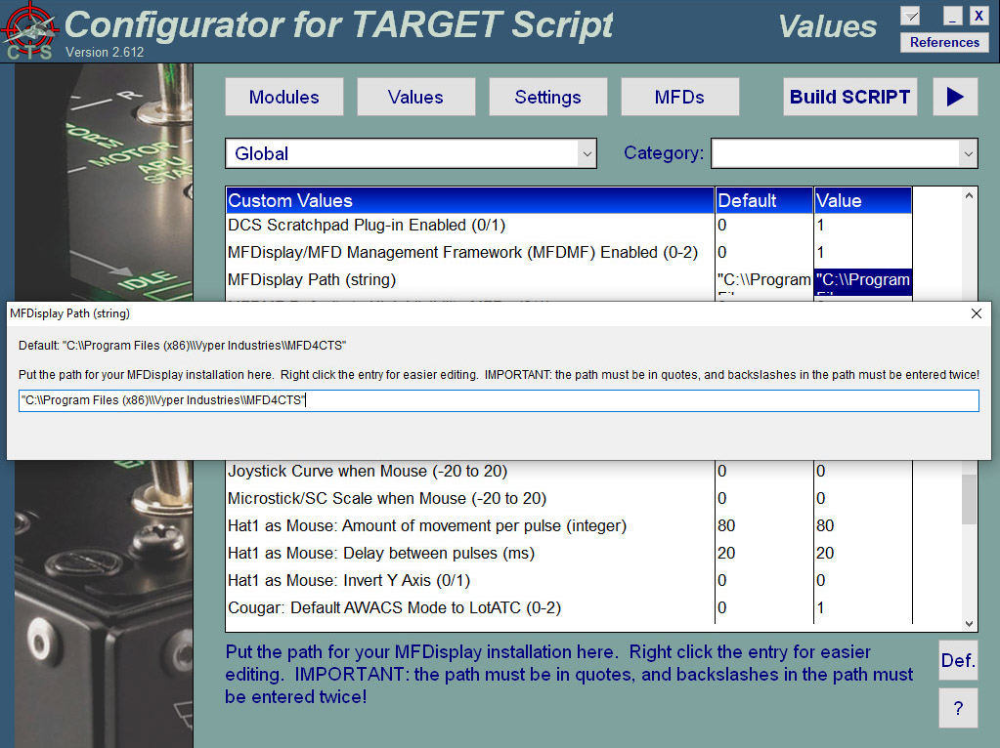
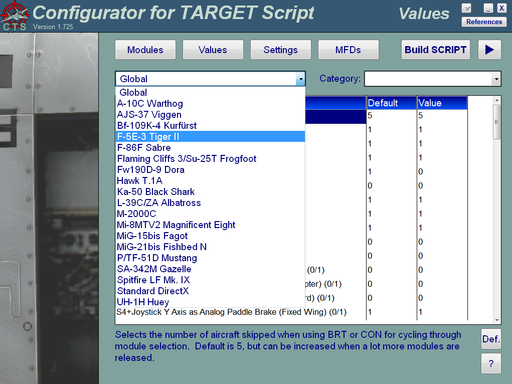
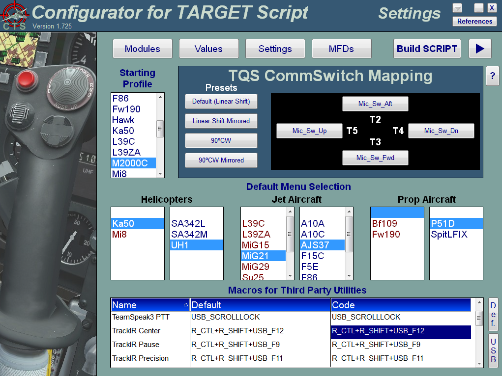
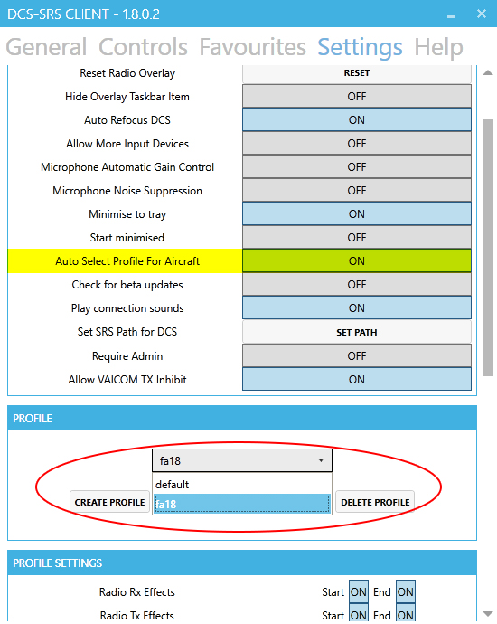
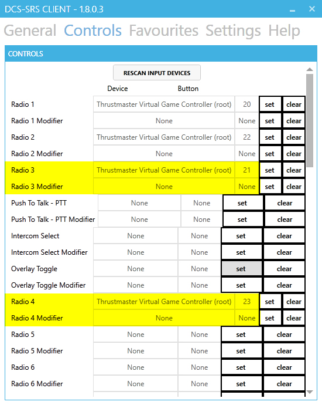

When I decided to do a DCS World profile, I wanted to do one that would maximize the use of DirectX buttons and DCS in-game modifiers to allow its use across multiple aircraft, all while mimicking the real controller system to the greatest extent possible. Finally, I wanted to create a profile that not only had commonality, but could be switched from one aircraft to another at the push of a button. This is my design philosophy, although I have also added many controller-level routines to do things that just can’t be customized from within DCS.
The purpose of the Advanced Configuration Guide is to provide an extensive reference of all parameters in DCS_World.tmc with which you can configure your hardware and customize your experience in DCS World. This guide is a companion to the Configurator TARGET Script (CTS) Graphical User Interface (GUI) introduced in 2.0, and should ideally supplement your customizations in the GUI. If you are just looking to get started with this script, please consult the Setup Guide instead.
IMPORTANT: Central Position Trimmer Mode should be disabled on all Helicopters in the DCS World Options menu unless the TARGET Central Position Trimmer function is disabled in this script.
The structure of this script is set up so that DCS_World.tmc, the “main” file in the DCS World Script, is mostly a list of options and parameters that is generated by the Configurator TARGET Script (CTS) GUI and can be customized by the end user. This allows you maximum flexibility in how you choose to enjoy this script, and with minimal risk of causing issues due to edits.
Note that parameters in DCS_World.tmc may change between script updates. If you decide to do a fresh install between script updates, be sure to save CTS.dat to import your original settings. Likewise, though you can directly edit DCS_World.tmc, using the CTS GUI is highly recommended so that your settings are saved between updates.
Note: some of the following information is also available in the Setup Guide, as the Advanced Configuration Guide is intended to be comprehensive and provide as much context as possible. In the event that the guides provide different information, please PM me to notify me of the discrepancy, then trust this guide as the one to most likely be more up to date.
The full path where this package was extracted is required to be input into the script. This is handled automatically by the CTS GUI, but you can make manual edits to the file as required. ScriptPath is a requirement for the audio component of aircraft selection. Where it says alias ScriptPath =, insert your path in quotes, including the drive letter. It is important to note that you need to apply two backslashes for each folder instead of the normal one. This is a requirement for the routine, and inputting the path incorrectly will disable the audio feedback.
In conjunction with ScriptPath is PathLength (also handled automatically by the GUI), which is the maximum number of characters that can be used in ScriptPath. If you keep your TARGET scripts in a long path name, feel free to increase this value. Likewise, if your ScriptPath line is correct, but you cannot hear the audio cues, make sure that the PathLength value exceeds the number of characters in ScriptPath.
The next options allow you to choose whether to enable the LEDs and the audio feedback upon selection of aircraft using the MFD rockers. When you cycle through aircraft with the MFD rockers, the LEDs provide 16 possible combinations (including zero), and the best ways to determine which aircraft is selected is by the text in the TARGET display and by the audio, which plays a wav file of the aircraft name. Note that the LEDs and audio are always used when selecting an aircraft from a MFD preset; these options determine whether LEDs and sounds are played when cycling through using the MFD rocker switches. See the User Reference for more details on aircraft selection.
To tailor the script to your needs, you must choose the modules you have installed. If you have a module installed, leave the checkbox selected in the GUI. Otherwise, deselect the aircraft by either double-clicking or right-clicking the corresponding checkbox. These settings do nothing except remove aircraft set to 0 from the aircraft selection cycle; leaving these values at 1 will not hurt the profile in any way. This section exists more for your convenience. Note that the Su-25A/T, P/TF-51D, and DirectX profiles cannot be selected and are all automatically enabled.
Important: you must double-click or right-click the entry to toggle selecction. Left clicking merely selects the entry. This is a database limitation, and cannot be changed.
Once you select the modules you own and have installed, you should press the Values button to start configuring the script to your preferences. There are a lot of values available to change, and each entry has help text at the bottom of the screen and a help button that links to the appropriate section in this document. These values are also filtered by module (or global) and by value category, making it easier to find what you're looking for and quickly modify like items. To clear your category filter, simply select the blank portion of the top of the combo box. Additionally, you can assign the default value to any selected entry by clicking the "Def." button on the bottom right of the screen. Finally, the help icon in the lower right of the screen provides context sensitive help for each entry.
The following sections will address the Global values by category as shown below.
Selects the number of aircraft skipped when using BRT or CON for cycling through module selection. Default is 5, but can be increased when a lot more modules are released.
Enables LED when using the rocker switches to go between aircraft. Set to 0 if you cycle through so quickly that the LEDs don't keep up, as this will greatly assist with profile stability.
Plays an audio file when a new plane is selected. Useful for fullscreen users. Set 0 to disable.
This section is primarily about what you have connected to your PC or HOTAS Cougar, though there are some global options in this section as well. Please see the following sections for details on setting these parameters.
Set this value to 1 if you use the HOTAS Warthog joystick, and 0 if you use the HOTAS Cougar joystick.
Set this value to 1 if you use the HOTAS Warthog throttle, and 0 if you use the HOTAS Cougar TQS. If you have both the Cougar and Warthog and you wish to use the TQS for the F-16C or JF-17, set this value to 2. If this value is 2, then setting the Use Cougar TQS with Module option will be enabled, with "Module" referring to supported modules such as the F-16C. If you use gameport rudder pedals attached to the Cougar, be sure to set the TM/Gameport Rudder Pedals value to 1. Note that setting Warthog Throttle to 2 will also disable any toe brakes on the gameport rudders.
While it is possible to use the Warthog Stick with the Cougar TQS and vice versa, this configuration has not been tested and is not currently supported. If you set Warthog Joystick to 1, then you should ideally have Warthog Throttle = 1. Conversely, if Warthog Joystick = 0, then Warthog Throttle should ideally be 0.
Note: if you do use a hybrid HOTAS configuration, be sure to use the diff.lua that corresponds to your Throttle (e.g. HC for TQS or WH for Warthog Throttle).
If Warthog Throttle is set to 2 (i.e. you have both the HOTAS Cougar and Warthog Throttle attached to your PC), enabling this value will map the Cougar TQS to be your default throttle in lieu of the Warthog. The Warthog buttons and switches will still be mapped, but the default buttons and axes will be mapped to the TQS.
If you have MFDs and have a TQS supported module set as a preset in CTS, tapping the OSB will disable the TQS in favor of the Warthog Throttle, and TEMPO Long will enable the TQS in lieu of the Warthog Throttle. Similarly, pressing H4P on the Warthog Stick will toggle between the TQS and Warthog Throttle.
This feature is currently only in use with the F-16C and JF-17.
Note: this feature is enabled, be sure to select the HOTAS Cougar (HC) version of the diff.lua instead of the Warthog (WH) version.
Set this value to 1 if you have the Thrustmaster F/A-18C Hornet Add-On Grip and wish to use it with supported aircraft. Otherwise, leave this value at 0. Enabling this value does not force you to use the Hornet Stick Grip on supported aircraft, but merely enables the configuration option, which can be set to default or selected on the fly.
Note that the Hornet Stick Grip can be used with either the Cougar or Warthog stick base.
This value is only for if you have HOTAS Cougar connected. If you do not have a HOTAS Cougar connected, leave the value at 0.
Set Gameport Rudder Pedals = 1 if you have gameport rudder pedals connected to your HOTAS Cougar or 2 if you don’t have rudder pedals and wish to use the ANT knob for rudder control. A setting of 2 enables ANT as rudder with helicopters and for ground steering with fixed wing aircraft while the gear is down.
If you use USB rudder pedals, set this value to 0. This includes the Thrustmaster T-Flight Rudder Pedals (TFRP). Likewise, if you use Cougar pedals with a HOTAS Warthog, you may wish to set this value to 0 in order to use the rudder as an independent controller.
Set this to the number of Thrustmaster MFDs attached to your PC. While TARGET can only program two MFDs, the existence of additional MFDs as separate controllers allows for additional programming options (particularly for the F/A-18C Hornet for which this value was added). Note that a minimum of two is assumed, as this is the number that is programmable in TARGET. If you do have a third MFD installed, this can be used as a separate controller, and you can import the included diff.lua files (marked with MFD3 in the filename) to assign functionality to either the F/A-18C AMPCD or the NS430 GPS.
Setting this value to 1 will exclude the RMFD from the script, and setting it to 0 will also exclude the LMFD from the script. Setting this value to 0 will also cause WAV files to be played with logical Gear State transition in lieu of LLED2 being cycled. Finally, a value of 0 will force the use of S3+SPDB/T9 Long to hot-select profiles.
Note: Setting this to a negative value will suppress the WAV files that are played when the value is otherwise set to 0.
If you have TM/Gameport Rudder Pedals = 2, then setting Reverse ANT Knob as Rudder = 1 reverses the axis. Setting 0 maps the axis to normal. This applies only to the rudder/ground steering function; all other ANT mappings are normal. Default is 1.
Many people like to use a reverse throttle axis when flying helicopters in order to mimic a collective. Setting this value 1 will reverse the throttle axis for helicopter profiles, while leaving the throttle axis as normal for fixed wing aircraft. Set this value to 0 if you prefer to use a conventional throttle for rotary wing aircraft.
Set this to 1 if you have TrackIR or any other head-tracking software that alleviates the need for a POV hat. This will default Hat1 to Trim functions, and add rudder trim capability along with increased padlock options. Set this to 0 if you wish to use Hat1 for POV.
If you use Virtual Reality (VR) headgear like the Oculus Rift, you can set Head Tracking Hardware = 2 and then use the POV hat for mouse button and wheel functionality. You will also need to set POV Hat function in VR to your desired value and set Pause Head Tracking at Gunner Station = 0. Also, set TriggerZoom to 0 for the time being, as the routine is not yet properly integrated with VR. See the Setup Guide for configuration instructions.
Important: see the User Reference for details on how the Head Tracking Hardware value maps Hat1 functionality.
If you have VR enabled and have MFDs attached, enabling this will use S3+T9/SPDB Long to enter Profile Selection Mode. Setting this to 0 will force S3+LOSB1 Long to enter Profile Selection (allowing you to use S3+T9/SPDB Long to cycle Airbrake Type on applicable aircraft).
Default value is 1 to allow VR users to not need MFDs to cycle profiles, but forcing this value off is the only way for VR users to enable real-time Airbrake Type selection. People without MFDs automatically use S3+T9/SPDB Long to enter Profile Selection Mode, and non-VR users with MFDs are forced to use S3+LOSB1 Long for Profile Selection.
Useful if you do not have separate USB Rudder Pedals with toe brakes, Differential Braking Logic allows you to use your existing gameport pedals attached to your Cougar for differential braking. If you have Rudder Pedals set to 1 or 2, then you can to the position of your gameport rudders or ANT knob in conjunction with the Paddle Switch (S4) to determine whether right brakes, left brakes, or both (full) brakes are used. Setting Differential Braking Logic = 1 lets S4 act as a full-on (digital) brake, with which brake applied determined by rudder position. Setting Differential Braking Logic to 0 makes S4 perform as full-on all wheelbrakes when activated.
Note: setting Differential Braking Logic to 1 requires a HOTAS Cougar with gameport rudder pedals. A Cougar without rudders can use Differential Braking Logic = 1 with Rudder Pedals = 2. If you do have a Cougar with gameport rudder pedals, then Differential Braking Logic = 1 is the recommended setting.
If you wish to use the Cougar joystick axes as analog braking axes on supported aircraft. Setting Differential Braking Logic = 2 will allow the use of JoyXY with S4 held to perform analog braking. If Rudder Pedals = 0, then the X axis is used for differential braking, and the Y axis (aft) is used for full braking. Otherwise JoyY (aft) is used in conjunction with the rudder position for analog differential braking.
Note: JoyXY analog braking (Differential Braking Logic = 2 ) works only with the Cougar, is recommended only for people using USB rudder pedals that don’t have toe brakes. This setting also requires manual configuration of the wheelbrake axes in DCS World. See the Appendix: Setting DCS World Options for JoyXY Differential Brakes for details.
Additional Note: regardless of Differential Braking Logic or any other Analog Brake setting, analog braking only applies when S4 is pressed (and not T6 as wheelbrake). In other words, there is currently no way to make T6 your analog braking modifier, nor is there any compelling reason to do so.
If you have both a HOTAS Cougar and Warthog, as well as toe brakes on the rudders attached to the Cougar, then you can enable the toe brakes by setting Differential Braking Logic = 3. Note that you must also set your left and right toe brake axes to JoyX and JoyY in the Cougar Control Panel for this to work (see the section in the Setup Guide called Cougar Control Panel (CCP) for Combined HOTAS Warthog and Cougar Users). Then when applicable, load the diff.lua with “whc” in the filename to enable the analog axes (see the section in the Setup Guide called Controller Profile Naming Convention for further details).
See the User Reference for more details on this feature.
Note: This feature is deprecated indefinitely. It still works, but its control mappings will not be updated. Warthog Joystick must be set to 1 for this to work properly.
If set to 1, holding JoyY all the way aft and releasing S4 will set the parking brake (or lock the axis in place if no specific parking brake command exists). S4+JoyY near neutral will release the brake. Exception: P-51D, which uses its own parking brake routine. Note that Differential Braking Logic does not need to be set to 2 to enable this feature; it will work with digital braking as well.
If this feature is enabled, you can use S4+JoyY (fwd) for analog braking along with momentary NoseWheel Steering (NWS). Other than using external USB rudder pedals with toe brakes, this is currently the only way to enable wheelbrakes with momentary NWS. S3 as NWS will continue to work regardless of this setting.
JoyY (aft) works exactly like the analog wheelbrakes without NWS engaged. In order to engage wheelbrakes with NWS, you must push JoyY forward of center. The amount of stick deflection forward translates to the same amount of brake pressure as if you were pulling aft. If Rudder Pedals = 0, then JoyX while JoyY is forward of center acts as differential braking with NWS engaged.
This value is independent of Differential Braking Logic, and if set to 1 will work even with Differential Braking Logic set to 0 (digital braking).
Note: this section does not apply if Differential Braking Logic = 3.
Enable if you wish to use S4+JoyY (aft) as an analog brake with paddle-based braking systems on fixed wing aircraft like the MiG-21. This setting is independent of Differential Braking Logic, so you can have an analog paddle brake even if you use digital braking on other aircraft. Default is 0. Note: This value is for fixed wing aircraft only and does not apply to helicopters like the Ka-50.
Set to 1 if you wish to use S4+JoyY (aft) as analog brake with helicopters. Like Analog Paddle Brake (Fixed Wing) , this setting is independent of Differential Braking Logic. Default is 0.
Note: currently the Ka-50 is the only helicopter that supports analog braking in DCS World.
This option was made for people who prefer to use a separate stick (like a force feedback stick) for WW2 aircraft, and it differs from the other Analog Brake parameters in that it acts as a situational disabler of Differential Braking Logic and Analog Paddle Brake rather than as an independent enabler. Whereas the other analog modifiers enabled some form of analog braking (often overriding Differential Braking Logic), Analog Paddle Brake (Warbird) is designed to disable analog braking with the Joystick if set to 0. People who use a separate stick will want to set Analog Paddle Brake (Warbird) = 0 so that digital braking is forced (the intent being to use T6). Otherwise, leave this value at 1 (default).
The Paddle Switch (S4) has traditionally been used as a Wheelbrake, but has dual functionality with US Navy carrier aircraft (e.g. F/A-18C) in disabling Nosewheel Steering (NWS). Enabling this allows dual functionality (both disabling NWS and engaging wheelbrake), and disabling this forces NWS disengage and disables braking altogether.
For details on the NWS/Wheelbrake co-functionality when this is enabled, see the User Reference.
This option either enables (1) or disables (0) padlock options for people with head tracking hardware/software like TrackIR. People who use the POV hat for viewing will always get padlock views, and all users get the Padlock Missile Threat view.
If this option is enabled, the TrackIR user gets an enhanced selection of padlock views using the shifted state of Hat1. The LockView/Cycle View and Unlock View commands are available with the shifted Hat1 up state (tap for lock view, hold for unlock view), and the Padlock Missile Threat and Padlock Terrain View keystrokes are shared with the right and left rudder trim respectively. Tap for padlock view, hold for rudder trim.
If you don't want the padlock views, or would rather not have a TEMPO command holding up your rudder trim, then set Padlock View Enabled = 0. This will reduce your padlock commands to the shifted Hat 1 state (tap for unlock view, hold for padlock missile threat). Padlock is automatically disabled if Head Tracking Hardware = 2.
If you have Head Tracking Software enabled, but wish to use the mouse to aim the door gun, set this to a positive value. The actual value is the time delay (in milliseconds) in calling for the TIR_Pause macro so that the Control and Shift keys don’t interfere with DCS World as modifiers when changing stations. Default is 300ms. If you have Head Tracking Hardware set to 2 for VR use, disable this feature by setting the value to 0. Otherwise, the feature should remain enabled globally and then optionally disabled for each applicable helicopter in the individual module settings.
Note: Even though the UH-1 and Mi-8 allow independent use of head tracking and gun aiming (with mouse), this value should still be enabled (except for VR). Disabling the feature on the individual aircraft instead of globally is the more desirable solution until the gunner implementation is standardized across all modules.
If you have Head Tracking Hardware set to 2 for VR use, this setting determines whether aircraft trim or mouse functionality is the default function of the POV hat. The other functions are accessed with the POV hat while holding S3. If this value is set to 0, then mouse functionality is the default function and aircraft trim is adjusted in a shifted state. If set to 1, then trim is the default POV function and mouse buttons are engaged in shifted mode.
Be sure to import the proper diff.lua for your chosen VR configuration. See the Setup Guide for details.
See the User Reference for VR Hat1 functionality.
Normally, in the profile selection menu, H4D Long or RSYMD Long cycles between the Hat1 POV modes up to the highest value selected with Head Tracking Hardware. For example, if Head Tracking Hardware is set to 1, H4D/RSYMD Long will toggle between TrackIR and using Hat1 as POV. Similarly, if Head Tracking Hardware is set to 2, H4D/RSYMD Long will also cycle through the VR modes (including the Default VR Hat Function).
If Head Tracking Hardware is set to 2 (VR) and you don't wish to cycle through POV and TrackIR options, setting Force VR Trim Mode on Cycle to 1 will toggle only the Default VR Hat Function without cycling through the POV and TrackIR options. If VR is not enabled, this value is not used (since the toggle will always be between TrackIR and POV). Default is 1.
For users with more than two MFDs, DirectEntry on some SnapViews may be redundant. In these instances, setting this value to 0 replaces the DirectEntry SnapView (i.e. one that holds the DX31 and DX32 modifiers for the duration of the SnapView) with a standard SnapView (i.e. one without modifiers). The sole purpose of disabling this value is disabling the modifiers, making for greater compatibility.
These values are assigned to individual modules.(e.g. F/A-18C and AV-8B).
The reason multicrew options are listed so near Head Tracking Options is that in this script, crew stations are normally switched using Hat1. On occasions where station changing shares a button (either shifted or unshifted) with trim functionality, the possibility exists that rapid use of the roll trim could "double tap" Hat1 and cause one to change stations. For aircraft where stations cannot be changed in multiplayer, options have been added to disable station change altogether. For those who would wish to disable station change, the ability to choose the default station on profile load is also available. See the User Reference for more details on selecting stations during profile selection.
For selected aircraft, the option exists to disable station change when the station change functionality on Hat1 shares a button with Roll Trim. The station change in this case is nomally actuated with a "double tap" of H1L/R. Leaving this option at 0 (default) does not disable station change, but keeps it available for use. Setting the value to 1 will disable station change if SimpleRadio Standalone (SRS) is currently enabled, as this implies multiplayer use and therefore the inability to change stations during flight. Disabling SRS will re-enable station change. Finally, setting this value to 2 force-disables station change regardless of SRS setting. This is most useful for people who use multiplayer exclusively and don't use SRS. Note that if this is set to 2, the only way to change the default station on profile load is to cycle the selected default station using H4P or using a TEMPO command on a MFD preset.
Note: there are individual values for each aircraft, so (for example) one can opt to disable station change with the F-14, while still allowing it for the L-39 and C-101.
With the ability to prevent station changing as set in the previous value, the ability to select a multicrew station during profile selection is important. Therefore, aircraft that allow the option to disable station changing also have a default station that will be selected with a profile. Each aircraft has its own value, so one can opt for the RIO station in the F-14 while retaining the front seat in the C-101. Setting this value to 1 leaves the front seat as the default station, while setting the value to 2 makes the rear seat the default crew station.
These values can also be switched during profile selection, either by pressing a MFD preset button (TEMPO Long for rear seat, TEMPO Short for front seat), or by pressing H4P on the Warthog Stick to toggle the desired station. When Station 2 is selected, Microsoft Anna will say "Station 2" immediately following the name of the selected aircraft profile.
By default, changing stations will play WAV files with Microsoft Anna saying "Station X," e.g. "Station 1" or "Station 2." This value is the delay in ms between the "Station" WAV and the number WAV file. To disable the WAV files entirely, set this value to 0.
These parameters are for use with the Cougar TQS.
ThrottleMax, ThrottleMin, and IdleDetent are not binary values, but rather percent points on the throttle axis at which ranges reside. The values assume 0% for idle and 100% for maximum afterburner, and can be pulled directly using Foxy controller tools. However, these values are reversed from the DirectX throttle values. Therefore, if you use the TARGET Device Analyzer for your values (take the raw value and divide by maximum for your percentage), be sure to subtract your value from 100 in order to get your actual percentage. For example, if you get 87% for your Idle Detent, then 100-87 = 13%.
This is the maximum value of your throttle (including the Afterburner Detent). Nominally 100, this can be changed if your throttle is not responsive throughout the entire range of the analog signal.
This is the minimum value of your throttle when it is at the full aft stops (behind the Idle Detent). Nominal value is 0.
This option allows the use of the Idle Detent as a trigger zone for starting and stopping engines, and the values should be set to the percentage of your throttle just above and below the Cougar's physical idle detent. If the Idle Detent Low End is set to a positive non-zero value, then pushing the throttle forward of the idle detent will initiate the engine start routine, and pulling the throttle back below idle while holding down S3 (to prevent inadvertent engine shutdown in flight) will initiate the engine shutdown routine.
If you wish to enable only part of the routine (e.g. if you want to use the start-up routine, but not shut down), you can set the Idle Detent boundaries to their values and then disable each individual routine further down in the configuration options. Nominal Value is 15.
If the option remains at 0, you can always start and stop your engines using the RMFD OSB14 and 15 (un-shifted to start, shifted to stop).
Throttle Shutdown Delay is the time delay between when the throttle is placed in Idle Cut-off (full aft) with S3 held and when the engine shutdown routine takes place. During this time, the throttle must remain fully aft and S3 must remain held for the engine shutdown to execute. Either moving the throttle forward of Idle or releasing S3 before the delay expires will cancel the engine shutdown. Default value is 2000 (2 seconds); set to 0 for instantaneous shutdown on command.
The normal Cougar microstick axes are physically oriented for a level X/Y when the throttle is at the MIL power setting, which is normal for fixed wing use. Should you wish to skew these axes, Microstick Offset rotates the analog Microstick so that the X and Y axes will be adjusted to your personal. Positive values indicate clockwise orientation, while negative values indicate counterclockwise orientation. Default value is 0.
Note: this offset only applies to the analog Microstick; digital axes cannot be offset in TARGET.
The normal Cougar microstick axes are physically oriented for a level X/Y when the throttle is at the MIL power setting, which is normal for fixed wing use. However, with a reverse throttle for collective use, the Microstick axes are skewed for normal use since the throttle position will normally be near the idle detent. Microstick Offset normally rotates the analog Microstick so that the X and Y axes will be level (as if the throttle was at the MIL power setting), thereby allowing for more natural movement. However, this creates issues with orientation when using a reverse throttle as with a helicopter collective. Microstick Offset in this case orients the microstick for your desired orientation with the collective more naturally in a "back" position during flight.
This offset is not applied unless the reverse throttle is currently in use (i.e. only if you have a helicopter profile selected). Negative values indicate counterclockwise orientation. Default value is -45.
Note: this offset only applies to the analog Microstick with helicopters (currently only the Ka-50); digital axes cannot be offset in TARGET.
Similar to the Cougar TQS values, Afterburner
Detent values are percentage values of the throttle
travel. The values assume 0% for idle and 100% for maximum
afterburner. However, these values are reversed from the
DirectX throttle values. Therefore, if you use the TARGET
Device Analyzer for your values (take the raw value and divide by
maximum for your percentage), be sure to subtract your value from 100
in order to get your actual percentage. For example, if you
get 35% for you’re the low end of your Afterburner Detent, then 100-35
= 65%.
Note that these values are only important if the Warthog Afterburner Detent
is installed and enabled.
The Warthog throttle has an afterburner detent that can be physically enabled or disabled. If you keep the detent enabled, then set this value to 1.
For non-afterburning aircraft, the throttle range will be to the afterburner detent, so there is no need to pull the throttle over the stop to get full range on the A-10 or Su-25.
H/T MTFDarkEagle for many of the throttle curves.
In the event that the Afterburner Detent is enabled, these values determine exactly where on the throttle the Mil Power setting stops (Afterburner Detent Low) and where the Afterburner begins (Afterburner Detent High). Each axis has its own settings to account for physical differences in each throttle.
Set the Low value to the percent value at which the throttle pushes against the detent. Set the High value to the lowest point on the throttle at which the throttle is still raised and clears the detent (should ideally be 1 percentage point greater). Default values are 65 (low) and 66 (high).
The Warthog throttle has hard stops for the idle/stop detents on both throttle axes. Normally, these work properly and one can safely perform engine stop/start operations without inadvertent actuation. However, if inadvertent actuation is an issue (e.g. the detent is broken or sloppy), setting this value to 0 will disable idle detent functionality to prevent inadvertent actuation. This value should remain enabled unless there is a hardware issue with the Warthog throttle.
By default, the Throttle Friction Lever (THR_FC) on the Warthog is mapped to Field of View (FOV) Zoom. Though there are some module specific variations (e.g. XM60 sight elevation in certain configurations), this is a global profile standard. However, FOV Zoom is disabled in VR, so THR_FC is automatically remapped to other functions for VR users.
This option allows you to disable the FOV Zoom functionality for the Warthog, and assigns THR_FC to the functions used by VR users (e.g. Antenna Elevation). Cougar users who wish to utilize this option will need to manually remap their ANT_ELEV axis for individual modules in the DCS Options menu.
When this value is set to 1, this option will have the airbrake LED indicator (LMFD LED 1) flash while the airbrake is deployed, as well as the landing gear LED indicator (LMFD LED2) when the gear is in transit. When set to 0, the LED indicators will illuminate as required without flashing. Setting the value to 0 is useful if you get profile crashes with the value set to 1. If you still have trouble with the value set to 0, set it to -1 to disable the LED cycling for landing gear, airbrake, and TriggerZoom altogether. If the value is set to -1, then in lieu of the LED indication, WAV files will indicate whether the gear is cycled up or down.
Important: if you set Rudder Pedals = 2, Flashing LEDs are automatically disabled.
This script has the ability to adjust your Cougar MFD and Warthog Throttle backlighting based on the state of the switches or buttons. This feature includes the Warthog throttle base backlighting as well as A-10C and F/A-18C states for Day/Night/Off MFD settings. The intent of these values is to align the Cougar MFD and Warthog Throttle backlighting to match the state of the MFD or cockpit illumination as specified by your inputs. Each applicable aircraft has its own option to enable adjustable backlighting, and each backlighting function is described in its respective aircraft-specific section in the User Reference.
If set to 1, then the backlighting will match your power setting from using the switches. Otherwise, the Cougar MFDs and Warthog Throttle will be backlit at the "Day" setting. Default is 0.
If Adjustable Backlighting is enabled, then the MFD backlighting values for Off, Night and Day represent the backlighting values (ranging from 0-255) for the in-game MFCD Off, Night, and Day settings respectively. These values also apply to the Warthog Throttle, though the throttle has fewer discrete lighting levels so you may not notice any small changes in value. Since the MFD backlighting intensity value also affects the two LEDs on each MFD, a minimum setting of 2 is recommended so that the LED cues can be seen in a “power off” state.
The Default MFD Setting is the default setting for MFD Backlighting on applicable aircraft (e.g. A-10C). The values 0, 1, and 2 represent Off, Night, and Day settings respectively. Note that for other modules that don’t have powered MFDs, the backlighting value will normally default to 2 (the "Day" setting).
This value indicates the amount of time (in ms) the RMFD LEDs will flash during engine shutdown (thereby indicating that engine shutdown is taking place). For Cougar users, this value should be smaller than the aircraft's Engine Shutdown Interval. Default is 4500.
This value determines how long the RMFD LEDs will illuminate to indicate the UV-26 side switch position (mimicking the in-game UV-26 LEDs in the Ka-50 and Mi-8). If this value is greater than 0, the LEDs will indicate the UV-26 side selection for the allotted time. This value should be a multiple of Switch Cycle Time (default 200ms). Default is 600ms.
The TriggerZoom Length value determines how long DCS will zoom your FOV, and therefore how zoomed you can expect the FOV to be. A larger value will give you more zoom. The original value was 800ms, but I have defaulted it to 700ms. If you wish to disable this feature, just set the value to 0. However, since the routine is hot-selectable there is no compelling reason to do this. VR users can leave the value at default, as VR uses a fixed zoom value (VR Zoom) instead af a timed zoom.
Note: this feature does not work if you have the TrackIR Z axis set to Zoom View in your DCS controller options.
Polling Interval for TriggerZoom. Lower values give more accurate results at cost of performance. Default is 50ms.
Delay between release of TG1 and the zoom out of the profile. Prevents the profile getting stuck with repeated TG1 presses. Default is 1500ms (1.5s).
Obsolete. Removed in 2.45.
Instead of having the FOV zoom out for the same amount of time that it zoomed in (which can cause some irregularities depending on CPU load), this option allows you to immediately set your FOV to default upon TG1 release. This feature is useful if you tend to use the default FOV zoom most of the time,.
Setting this value to 1 will press Keypad Enter to reset the FOV zoom instead of zooming out. Setting this value to 0 causes the view will zoom out on TG1 release for the same length of time that the view zoomed in on TG1 press. Default is 0.
The addition of AWACS Mode to the script has added options for using the Joystick and SC/Microstick as a mouse. The following values in CTS govern the use of the HOTAS as a surrogate mouse.
If this value is enabled, then when AWACS Mode is selected, the joystick will move the mouse cursor. Note that the joystick will override the actual mouse movement, so if you have a senstitive stick or spiking potentiometers, be sure to include a large enough deadzone. Default is 0 due to the ability of the controller to override the mouse.
Note: This value now applies only to the HOTAS Cougar. Warthog users can change mouse emulation on the Joystick and SC on the fly using the ENG OPER switches.
This value is a percentage of the stick movement around the center of the X and Y axes in which the movement is not sent to the mouse. There are different values for the Cougar and Warthog due to the standard Cougar using potentiometers (which degrade with age) and the Warthog using Hall sensors. If slight movements of your controller adversely affect the mouse cursor, increase the deadzone. This value normally ranges from 1 to 5 percent.
Note: both the SC and Microstick on the throttles also have their own deadzone values.
The Curve and Scale values allow you to shape your mouse slew axes for the Joystick and Throttle respectively. Numbers vary from -20 to 20. Curve is applied to the Joystick, with positive values creating a smaller "throw" near the center with an accelerated throw near the edges of stick travel. Conversely, an negative value makes for significant movement near center with the throw tapering off near the edges of stick travel.
Similar to Curve, Scale also uses values from -20 to 20. However, Scale either accelerates or attenuates the limits of the SC/Microstick axis, either allowing you to reach the throw limits quicker (positive, higher speed) or preventing full travel of the axis (negative, higher precision).Both values default to 0 for a flat curve/scale.
Part of the HOTAS as mouse includes the use of digital axes to move the mouse. While the variables indicate that this is for Hat1, Warthog Throttle users can also map the mouse slew functionality to the Coolie Switch (CS). To facilitate this functionality, we need to establish the speed at which the mouse cursor moves while pressing a hat switch. There are two values associated with this speed: Amount of Movement per pulse and Delay between pulses in ms. A large amount of movement combined with a short pulse rate will translate to a high speed slew action, whereas a lower amount of movement with the same rate will provide a decent slew rate without sacrificing precision. A small amount of movement combined with a high delay will provide a slow-to-update mouse cursor, but will also apply less overhead to the TARGET software. Note that there are two sets for Movement and Delay values: one set for Mouse X/Y axes, and one set for the Mouse Z axis (Scrollwheel).
Finally, there is an option to Invert the Y axis while using the mouse. This will apply to both Hat1 and the CS, but does not apply to the Joystick as Mouse in AWACS Mode.
If enabled, the selected radio will be indicated in binary using the MFD LEDs (e.g. radio 3 will show a 0 0 1 1 LED configuration). Disable this feature if rapid LED cycling causes stability issues with the script.
LotATC Mode replaces mouse buttons on the stick with Shift and Control, and adds Alt to S3. LotATC Mode also applies keystroke macros to Hat3 while in Shifted Mode. Since S3 (which engages Shifted Mode) also holds the ALT key, the default LotATC macros in CTS (all of which use ALT as a modifier) consist only of the primary key without the ALT modifier present. If you have changed any of the customizable keystroke macros in LotATC, you will want to update the keystroke in the CTS Settings tab. If you changed it to a different ALT+Key command, simply apply the new key to the CTS entry. If you have changed the modifier, you must also add the modifier to CTS, and in order to work with the CTS profile the LotATC macro itself must also include the ALT key.
This section covers compatibility and implementation of specific DCS World options and plug-ins.
The DCS Scratchpad plug-in allows you to press a hotkey (default CTL+SHIFT+X) to toggle a scratchpad overlay in DCS, into which you can type notes such as coordinates, frequencies, procedures, etc. Enabling this value will assign the DCS Scratchpad Hotkey to the NS430 toggle functionality if the following criteria is met:
If enabled, the DCS Scratchpad Hotkey will replace the NS430 Toggle hotkey, which is normally S3+LOSB1 Short. The exceptions are the P-51D and AV-8B (which use S3+ROSB20) and the A-10C, Ka-50, and F/A-18C, none of which use the NS430. See the User Reference for details on this function mapping.
Note: if you have changed the default DCS Scratchpad Hotkey from CTRL+SHIFT+X, you must also reassign this value in the Macros for Third-Party Utilities section of the Settings page in CTS.
Set MFDisplay/MFDMF Enabled to 2 to automatically launch MFDMF when launching the CTS script, then enter the path to MFDMF in the MFDMF Path entry in CTS. If you are still using MFDisplay, then set MFDisplay/MFDMF Enabled to 1 to automatically launch MFDisplay when launching the CTS script, then enter the path to MFDisplay in the MFDisplay Path entry in CTS. Be sure to include quotations in the path value, and use two backslashes to delineate between folders in the folder tree. Finally, the buffer size for the execute command has been hard-coded to 255. Be sure your MFDisplay Path does not exceed 100 characters to ensure that there is no buffer overrun (the default C:\\Program Files (x86)\\Vyper Industries\\MFD4CTS is 65 characters, and C:\\Program Files\\Vyper Industries\\MFDMF is 57 characters).
Since it is difficult to enter something like a path in the Values table in the CTS GUI, you can right click the desired path entry, then enter the path in a separate dialog box as shown below. Please be aware that pressing the Alt key (e.g. to Alt-Tab) may cause the OK and Cancel buttons to disappear. This is a Windows 10 GUI issue, and can be fixed by hovering your mouse over the button location. Similarly, you can press Enter to accept the new value, or click the X in the upper right corner of the dialog box to cancel and keep your existing value.

If you prefer to use the High Visibility overlays instead of the stylized MFD overlays, set MFDisplay/MFDMF Defaults to High Visibility MFDs to 1. These overlays will then be used whenever available. Any applicable Direct Entry graphics will remain stylized.
Finally, if you don't wish to use submodule overlays (e.g. F-14 CAP drum or FLIR overlay), be sure to set MFDisplay/MFDMF Submodule Overlays Enabled to 0.
Note: Before you load MFDisplay or MFDMF with CTS, be sure to run it once beforehand. Then be sure to set the target folder to your CTS Profile JPGs folder (e.g. C:\Users\Username\Documents\TARGET Profiles\Docs\Profile JPGs). You will also want to configure the overlay locations to fit your screen setup. See the MFDisplay Configuration Guide for more details. MFDMF guide is pending.
The following values are used across all modules for which the functions apply.
1 is the default value, which sets the LMFD LED 2 to on when a new aircraft profile is loaded. This is useful for starting missions on the ground, where the gear will obviously be deployed.
Important: the Landing Gear Indicator light is more than just cosmetic; it is an indicator of whether the profile believes that the gear is up or down. The gear state within the profile determines whether S4 enables wheel brakes (gear down) or its regular airborne function (e.g. autopilot override in the Su-25T).If you regularly start missions in the air, setting this value to 0 may be preferable.
If you have the Thrustmaster F/A-18C Hornet add-on grip enabled, this determines whether the Hornet grip is the default stick grip for supported aircraft. Set to 1 if you wish to use the F/A-18C grip by default, or 0 if you wish to use the FLCS grip.
Note: profiles that do not support the Hornet Stick Grip will be mapped to the FLCS by default, so this does not inhibit the use of any existing profiles. Grips can be cycled between stick bases on the fly, and the Hornet and FLCS Grips can be cycled on the fly as well.
By default, CTS plays WAV files with +13dB volume increase so the WAV files can be heard over DCS engine noise. Setting this value to 0 (disabling it) will play the lower volume sounds, which could be useful for people using headsets. H/T Stal2k for the low volume sound files.
Note: this is a 0/1 value; it does not go up to 11!
Suppresses profile selection speech when profile is initially loaded. Follow-on selections will enable speech. Useful if you don't want to hear the selected profile announced on startup. Default is 0.
This section currently identifies which communications packages you have installed or regularly use with DCS World. Regardless of configuration options selected, this profile assumes you already use Teamspeak3 (TS3) or an equivalent Voice over IP (VoIP) application, and defaults the Press To Talk (PTT) key to Button 21 (DX21, reads “Joystick Button 20” in TS3) or Scroll Lock.
Unless otherwise specified, set each option either to 1 to enable it or 0 to disable it.
Note: This script used to be compatible with VAC. As of 2.10, VAC compatibility has been completely removed in favor of VAICOM Pro integration.
VAICOM Pro is a plugin for the VoiceAttack voice recognition software. Going above and beyond standard voice recognition and macro execution, VAICOM Pro uses the DCS export function to determine existing callsigns in a mission, the nearest airfield, the current aircraft (and radio stack), and executes communications without even using the communications menu and function keys! Much more than simply voice recognition software, VAICOM Pro takes immersion to another level. As of version 2.10 of this script, VAICOM Pro use has been integrated into the routine.
To enable VAICOM Pro, set VAICOM Pro Voice Activation Software = 1 in CTS. Similarly, if you have the Chatter Themes Extension Pack for VAICOM Pro, set VAICOM Pro Voice Chatter Pack Enabled = 1.
If you have AI RIO installed and enabled in VAICOM Pro, then set VAICOM Pro AI RIO Enabled = 1. This will force the profile to use TX5/Intercom instead of the Jester AI wheel menu. Since TX5 is mapped to DX30+DX21, there is a delay between DX30 and DX21 to prevent TX4/Auto from being simultaneously activated and then left on. If you find that pressing T2/MSD/MSP causes you to simulcast on TX4 and TX5, you may need to increase the VAICOM TX5 Delay between Modifier and Active Key value in CTS.
Important: Enabling AI RIO in VAICOM Pro modifies DCS datafiles to remove the Jester Command Wheel. As such, setting VAICOM Pro AI RIO Enabled = 1 in CTS will force-enable VAICOM Pro in CTS when the F-14 profile is loaded.
Note: Be sure to set up AI RIO by following instructions in the VAICOM Pro manual starting at page 36.
The Internet Radio parameter is intended for use with DCS-SimpleRadio Standalone (SRS). SRS allows emulation of radio limitations in multiplayer, including requiring that the proper radio frequency be selected and the proper MIC Switch be pressed in order to be heard by others.
Set to 1 if you use DCS-SimpleRadio Standalone. SRS use is integrated with VAICOM Pro.
Note: For the A-10C if VAICOM Pro is not enabled, depressing the MIC Switch engages the CommState routine, which remaps Hats2-4 to the F1-F12 keys regardless of shifted state. As such, even though you are defaulting to VoIP, the comm menu still displays to prevent the Function keys from inadvertently changing your view. Likewise, DCS World doesn't recognize the communications Function Keys when a modifier is in use, so you will need to release the shift button (S3) in order to use the AI Comms menu.
Support for TARS, Aries Airborne Radio and UniversRadio has been removed in favor of SimpleRadio Standalone and VAICOM Pro integration. The aforementioned TeamSpeak Radio programs may still work, but are unsupported.
If SRS is disabled, this function will also be disabled.
If you use the Common Push-to-Talk (instead of three separate PTTs) with SimpleRadio and VAICOM Pro, set this value to 1. To use a common PTT in VAICOM Pro, you must also check "Map multi to single" in the PTT menu and use TX4 as the single use key. Leaving this at 0 is recommended for fully featured integration with SRS and VAICOM Pro.
This is for the External Radio program or Radio Overlay used for Flaming Cliffs aircraft so that they can select radio frequencies and speak with other DCS users. This has only been tested with UniversRadio, but should work with Aries as well. Set this to 1 if you use hotkeys to change between radio frequency presets, or 0 if you don’t.
This feature has been disabled with the removal of Aries/UniversRadio compatibilty. A SimpleRadio fullscreen solution will be addressed in a future build.
Determines whether the profile will use button DX21 or Scroll Lock for the Push-to-Talk (PTT) function in TS3 as well as default A-10C Mic Switch keyboard commands or DX20,22 and 23 if Internet Radio is in use. This option is present for two reasons:
Set 0 for Scroll Lock/Keyboard Mic Switches and 1 for DX21.
Note: If you choose not to use Scroll Lock for your keyboard PTT (i.e. you would rather use another key) you can change the mapping of “TeamSpeak 3 PTT" on the CTS Settings Screen. The profile will then map to your chosen key.Additional Note: If you use DX21 as your PTT with the A-10C, then while in the CMSP Direct Entry SnapView, use of the TS3 PTT button will cycle the NXT rocker switch. Either set Voice Chat Hotkey as DirectX = 0 or take care not to speak on TS3 while programming your countermeasure settings.
The CommState routine enables Hats 2-4 to be mapped to Function keys F1-F12. In other words, while you hold down the MIC Switch, you can use Hat2 for F1-F4, Hat3 for F5-F8, and Hat4 for F9-F12 (all starting at the top and rotating clockwise). Releasing the MIC Switch will revert the buttons to their normal state. This will allow use of the communications menu without having to reach for the keyboard.
While CommState mode is active, the Right MFD LED#2 illuminates to remind you of this fact. Likewise, The RMFD LED#1 illuminates when you have your Voice Chat PTT depressed.
Hat4 Right (H4R) uses a TEMPO command in CommState where a long hold presses F12 and a short tap toggles the communications menu. This is useful if the communications menu pops up while you’re not in CommState (e.g. AWACS calls you with bogey dope), as you can use H4R Short to toggle the communications menu on or off.
By default, CommState is active whether the Mic Switch is pressed in a shifted state. In other words, the CommState routine will be in effect even if you are using T2-T4 for VoIP (e.g. SimpleRadio), and you will be unable to use the Hat2-4 functions while you are talking. I may refine this routine for future releases, but in the mean time, if you talk over Internet Radio a lot more than you use AI communications, you may want to disable CommState.
If you have VAICOM Pro enabled, CommState is disabled by default unless you use S3 with Comm/Mic Switch Down. To force the use of CommState with VAICOM Pro enabled, set CommState Allow = 2 in CTS.
This variable applies only to multi-crewed aircraft, and currently only the UH-1. Setting this to 1 enables the specific position’s communications menu while at that station (e.g. Co-Pilot’s Radio menu while at the Co-Pilot station). A 0 value sets all communications menus to the Pilot specific menus. This feature is disabled if VAICOM Pro is enabled. Default is 1. See the User Reference for more details.
These values determine how much time you want to be able to “tap” or “double-tap” a button, or how much time should transpire before a function is called. You might find yourself coming back to the profile and updating these values until you find your preferred settings. The first three timing Values (Keypress Duration, Delay Between Keypresses, and Delay between Modifier and Active Keypress) are used in timing operations throughout the script, and modifying them may have adverse effects.
Note: All Values are in milliseconds.
This is the length of time that a key is held for a PULSE command, and is the first argument in the SetKBRate() statement in DCS_World.tmc. This value should be as small as possible while providing consistent response in DCS World. The default is 50 and should only be changed if necessary.
Note: there is a F/A-18C specific value that defaults to 70. This provides more responsiveness for the F/A-18C and still allows a consistent double-tap of S3 when cycling the FLIR mode.
This is the default length of time for a delay D() statement in a CHAIN, and is the second argument in SetKBRate(). This value should exceed Keypress Duration, but should be as small as possible while allowing consistent serial response in DCS World. The default is 60 and should only be changed if necessary.
Note: there is a F/A-18C specific value that defaults to 80. This provides more responsiveness for the F/A-18C and still allows a consistent double-tap of S3 when cycling the FLIR mode.
This is the default delay in a CHAIN between a modifier (DX30, DX31, DX32) and the active key (DX1-DX28). This is here to ensure that modifiers are pressed slightly ahead of the active key, as the sensitivity of such things appears to be increased as of DCS World 1.2.7. This value should be as small as possible while allowing consistent response with CHAINs (MFDs and modified buttons). The default is 10 and should only be changed if necessary.
This is a forced delay between LED activity calls, which greatly increases the stability of this script (since most TARGET crashes occur with simultaneous LED use). Default is 50, but can be increased if stability is still an issue during major LED calls (e.g. during profile changes).
This value in milliseconds determines the time delay between cycling individual switches in a macro. For example, this applies to the 4 individual switches on the A-10C Countermeasure Stores Panel (CMSP) when S3+RMFD OSB5 is pressed as well as Circuit Breaker cycling in the Mi-8. More than just a cosmetic option, this is also used in functions that involve progressive switches (such as a 5 position switch with no discrete command states). Therefore, this value should never be less than the Delay Between Keypresses. Default is 200.
Polling interval in ms for TARGET based fixed wing trimming. Smaller value means higher rate of polling when Hat 1 is held down. If you adjust this, you may need to adjust TARGET Progressive Trim Rate (X and Y axes) in the opposite direction in order to maintain controllable trim settings. See the User Reference for more details.
If Head Tracking Hardware = 2, Hat1 U/D controls the mousewheel in a TEMPO function. TEMPO Short (ModTempo) is a single increment, and TEMPO Long repeats the mousewheel command at the polling interval in ms set by the Polling Interval for Repeating VR Mouse Scroll Wheel. Reducing this number decreases the delay between pulses, thereby increasing the rate. Increasing the value decreases the wheel rate. This number should never be less than the Delay Between Keypresses. Default is 100.
TEMPO is a function in TARGET that allows for multiple functions assigned to a single button based on how long the button is held. This mimics the actual A-10C HOTAS, which for example uses the China Hat Aft to either Boresight the Targeting Pod (tapping the switch, i.e. TEMPO Short), or slaving the Targeting Pod to the current Steerpoint (holding down the switch, i.e. TEMPO Long). The TEMPO value is the point at which holding the button for that amount of time becomes TEMPO Long.
This script uses TEMPO for a lot of functions, and also has different TEMPO values for different situations. These values are discussed here.
This constant determines the amount of time before a button is considered “held” (TEMPO Long) instead of “tapped” (TEMPO Short). This value is the default time (in ms) for most TEMPO commands. Default is 500.
This is the default argument for a number TEMPO commands in this profile (primarily Hat1 and S3 TEMPO) in which a function is executed when the button is quickly tapped and released. This value should be considerably faster than the Default TEMPO value (which is 500ms). You want this value to be as fast as you can comfortably handle, as having too large a value could have adverse effects if you are fast at executing shifted commands. Default is 300.
Note: For Foxy veterans, you may find that it is harder to meet the time constraints you were comfortable with in Foxy. For example, I used 160ms in Foxy for this function, but need 250ms in TARGET for the same comfort level.
This constant determines the time after which the window to “double-tap” a button has expired. This is no different than setting the double-click speed for your mouse. Similar to thhe S3 Function/Modifier TEMPO value, this value should be as fast as you can comfortably double-tap a button or hat switch. Default is 350ms.
This constant determines the TEMPO time to hold the specified button, and is used on TEMPO commands where a discrete delay should exceed Default TEMPO to avoid inadvertent triggering (though you may set this value to the Default TEMPO value if you disagree). Examples include setting Master Arm and Gun Arm to SAFE in the A-10C. Default is 800ms.
This constant is used for single buttons that use a TEMPO command to select a discrete switch state. Normally, TEMPO Long enables the switch or button (On), and TEMPO Short disables the switch or button (Off). This functionality allows the user to discretely select a switch position without having to look inside the cockpit (as opposed to a toggle function). This is ideally a shorter duration than the Default TEMPO value to allow for quicker switch actuation in a dynamic environment, but such a duration is obviously a personal preference. Default is 180ms.
This constant determines the time required to hold down the S3 button and the LMFD OSB1 button for the aircraft profile to which you wish to switch. Default is 2000 (2 sec) to prevent inadvertent switching.
These constants determine the amount of time required to hold down the S3 and H3U/D (Cougar) or CHB/F (Warthog) to either raise or lower the gear. Keys released prior to this time will retract or extend the flaps respectively (Cougar). The values are separate because raising the gear is often a time-sensitive operation (especially when launching from a carrier) and accidentally deploying the gear can cause aircraft damage. Defaults are 500ms (up) and 1000ms (down).
In addition to the global values coverd in the previous section, this script includes many values for individual aircraft profiles. These are filtered by the Modules selector as shown in the following figure:
These values allow individual aircraft customization and timing options. Many values are 1 or 0, for enabled or disabled respectively. However, the following routines require some explanation.
Transit times for the landing gear and airbrakes are customizable for each profile. The value is the time in milliseconds for the transit to complete. Again, these indications are strictly cosmetic.
Landing Gear Transit Time represents the amount of time the landing gear takes to go between raised and lowered states. The same value is used regardless of whether the gear is being raised or lowered. In some cases, the time it takes to retract landing gear differs from the time to deploy the landing gear. In these cases, you will see Landing Gear Deployment Time and Landing Gear Retraction Time values in lieu of Landing Gear Transit Time.
Conversely, the air brakes have two values: Airbrake Retraction Time and Airbrake Extension Time, which represent the time to retract and extend the airbrakes respectively. This is because it often takes less time to extend the brakes than to retract them.
Cougar users, you remember setting Idle Detent to 0 or 1 earlier, right? If you selected 1, then this is how you customize your settings.
Since the Cougar TQS has a single axis, this script automates a delay between starting engines so that on two-engine aircraft, one throttle press will start both engines.
Time Between Engine Starts is the time (in ms) between starting the left engine and the right engine. If you're using FC3 and you want to quickly start and taxi, you can set this value to a low value. However, if you're doing a complex engine start on something like the A-10C, you'll probably want at least 40,000ms (40s) between engines so you don't overwork the APU. In order to have the engines start simultaneously, set the value to 1 (1ms is close enough). To disable the throttle start feature, set the value to 0.
Note: for single-engine aircraft like the F-16C Viper, this is a binary value (0/1) to enable or disable the feature.
Time Between Engine Shutdowns works exactly the same way as Time Between Engine Starts. Therefore, if you wish to use the engine start feature, but you want to disable the engine stop feature to prevent inadvertent shutdown, set Time Between Engine Starts to a positive value and set Time Between Engine Shutdowns to 0.
Note: for single-engine aircraft like the F-16C Viper, this is a binary value (0/1) to enable or disable the feature.
Starter Indicator Duration refers to the amount of time the RMFD LEDs will be lit (LED1 for the left engine, LED2 for the right engine), and simulates the starter lights in many of the aircraft. For most aircraft, this feature is strictly cosmetic, and can be disabled by setting the value to 0. A notable exception is the Ka-50 for Cougar users, which allows use of the dogfight switch to move the fuel cut-off levers while this state is active. Default value for the Ka-50 is 40 seconds. See the User Reference for more details.
Specific to the UH-1, which requires a throttle down after releasing the idle stop, this value determines how long the throttle down key (PGDN) is held once the left throttle is placed in the idle stop. Left Throttle as Analog UH-1 Throttle must be enabled.
There are four airbrake types that are globally supported in this script. Two types are analog brakes, and two types are digital (i.e. brakes fully deployed or retracted). While analog brake types are normally assigned to the individual aircraft based on mapping requirements, the digital brakes are often selectable based on personal preference.
Digital brake types are 1 for brakes out while the brake switch is held. T9/SPDB is spring loaded for momentary brake use, while T10/SPDF locks in place for more prolonged brake use. Either activation will deploy the airbrakes, and release to neutral will retract the brakes.
Digital brake type 0 is mapped exactly as the analog brakes are mapped, with T9/SPDB deploying brakes and T10/SPDF retracting them. The only difference is that the brakes fully deploy or retract regardless of the amount of time the switch is held in position.
See the User Reference for more detailed information on all four airbrake types.
If you own the NS430 GPS module and have it enabled in the Modules section of CTS, then basic NS430 functionality (assigning a button to toggle the 2D NS430 display) is enabled by default for all compatible aircraft. However, if you wish to disable NS430 functionality for specific aircraft, you may set the NS430 Enabled for <Selected Aircraft> to 0 and it will revert the NS430 toggle button (usually S3+LOSB1) to its original secondary function (e.g. NVG Toggle) with S3 held (or TEMPO Long in the case of the UH-1 and Mi-8).
Note: if the Number of Thrustmaster MFDs is set to 3 or greater, the script will revert the NS430 toggle button to its original secondary function regardless of your setting. This is because the profile assumes you will be using the third MFD for NS430 GPS functions, and MFD3 OSB17 is set as the toggle function.
Some profiles (particularly warbirds and helicopters with simple HOTAS layouts) are optimized with TEMPO commands and maximized use of the Throttle and MFDs so that a third party joystick can be used as the primary controller. Warbirds and helicopters are singled out for the benefit of force feedback, and if this value is present for the particular module, then setting the value to 0 will further optimize the Throttle and MFDs with the understanding that shifted commands will not be used in-flight. If you use a separate joystick (such as the Sidewinder FFB2 for the UH-1 Huey), then set this value to 0. Otherwise, leave the value at 1.
Each module has its own value, which if enabled will set the left throttle of the Warthog to the analog throttle axis. The right throttle remains as the collective, but you now have two axes. With the left throttle axis as the in-game throttle, the Pinky Switch allows you to lock the axis in its current position, which is useful to prevent inadvertent throttle movement since the throttle in western turboshaft helicopters tend to be "set and forget." Additionally, some functions are contextually mapped based on throttle position since an independent left throttle means that the LTB is not as readily available as if the throttles remained connected. See the individual module sections in the User Reference for further details on context sensitive mapping.
If this feature is disabled, the Pinky Switch controls the digital throttle (e.g. PGUP/PGDN), and the buttons maintain their default functions.
If any applicable Left Analog Throttle value is set to -1, this will remove any throttle/corrector functionality from the Left Throttle and Pinky Switch, and instead replace the Pinky Switch functionality with External Lighting as is often found in the western style jets. This also applies in some cases when the Discrete Throttle for Russian Helicopters is set to -1. The alternate functionality for each helicopter is as follows:
| Helicopter | PSF | PSB | PSM |
| AH-64 (Pilot) | Nav Lights BRT /I Anti-Coll Lights WHITE |
Nav Lights DIM /I Anti-Coll Lights RED |
Nav Lights OFF /I Anti-Coll Lights OFF |
| Mi-8 Mi-24 (Pilot) |
Nav Lights BRT /I Formation Lights BRT |
Nav Lights DIM /I Formation Lights DIM |
Nav Lights OFF /I Formation Lights OFF |
| UH-1 | Nav Lights STEADY /I Anti-Coll Lights Toggle |
Nav Lights FLASH /I Nav Lights BRT/DIM Toggle |
Nav Lights OFF |
If the helicopter is not listed in the table above, then the PS has no alternate functionality, and setting the corresponding value to -1 will assign it a nominal value of 0.
This value determines whether the Throttle (on the Warthog Throttle Pinky Switch) is used for discrete in-game throttle positions (Idle/Auto/Max), or simply to raise/lower the throttle. If this feature is enabled, the Pinky Switch discretely determines throttle position (PSB for Max, PSF for Idle, PSM for Auto If disabled, the profile uses a repeating command to modify selected throttle position while the Pinky Switch is not centered. In both cases, the Flaps Switch determines which throttles are moved: FLAPU for left throttle, FLAPD for right throttle, and FLAPM for both throttles.
Note: this value does not apply to the Mi-24P Hind, which has a throttle similar to western style helicopters.
If the Discrete Throttle is disabled, this value determines the repeat interval in milliseconds for the throttle adjustment. The profile uses a repeating command to modify selected throttle position when the Pinky Switch is not centered. Since the throttle increments in discrete stages (e.g Idle/Auto/Max), the delay time should be long enough to comfortably reset the Pinky Switch after observing throttle movement. This value must be an even number. Default is 1000 (1s).
Note: this value is not used if the Discrete Throttle is enabled..
These parameters enable or disable the TARGET Central Position Trimmer Mode (hereafter TCPTM), which is an alternative to the Eagle Dynamics helicopter trimmer that allows you to use both Center Position trimming as well as instantaneous “old style” trimming on the fly.
See the User Reference for details on how the TCPTM routine works.
A positive value here enables TCPTM for use with all helicopters. This value is the polling time for the repeatable portion of the routine in ms. A value of 0 disables TCPTM altogether. Default is 50, but can be increased if the script is using too many resources.
This is a special TEMPO value (in ms) to differentiate between Short and Long uses of the TCPTM trimmer function. Note that this is strictly a TEMPO and not a polling value. Default is 500ms.
TEMPO above which the Cougar H4D will enter recentering trim mode. Short will be H4D standard function. Set to 0 to disable unshifted H4D function altogether (if you prefer to use S3 for recentering).
This is a Boolean (i.e. True/False) value that determines whether TCPTM will also incorporate rudder trim. This setting only applies if Rudder Pedals = 1; if Rudder Pedals = 0, then set this to 0 as well. This value can be set individually for each helicopter, allowing you flexibility if you wish to enable rudder trim in the Mi-8 or Ka-50, but disable it in the UH-1.
If Rudder Pedals = 1, then This setting should match your Rudder Trimmer settings in the DCS World Options menus for each of your helicopters. Set to 1 to use rudder trim, and 0 to disengage rudder from the trimmer. For example, if you wish to use Rudder Trimmer for the Mi-8, then set CenterPositRudder_Mi8 = 1 and enable Rudder Trimmer on the DCS World Mi-8 Special Options menu.
If If Rudder Pedals = 0, then you can set the Rudder Trimmer option in DCS World to whatever you prefer. Just realize that TARGET cannot compensate for it; after trimming, your rudder input will effectively be doubled until you recenter your pedals.
Note: if you have Rudder Pedals = 2 (Cougar Only), CenterPositRudder will automatically be disabled. Be sure to disable Rudder Trimmer in the DCS World Options menu as well.
Unlike the Central Position Trimmer Mode by Eagle Dynamics, the TCPTM routine allows you to get the stick “near center” in order to reset. The zone around the center axis is customizable with TCPTM Recenter/Dead Zone Size, and allows you to adjust the size of your centering zone (i.e. a larger zone for looser sticks or less-precise potentiometers, or for ham-fisted pilots like myself). The minimum value is 0 (dead center) and the maximum value is 32768 (full deflection). Default is 2000.
This value is a delay between when the joystick is passively centered (stick within TCPTM Recenter boundaries) and when H4D and S3 are remapped from TCPTM centering commands to their standard functions. The purpose of this delay is to minimize inadvertent S3 or H4D command activation by attempting to actively recenter TCPTM when it has already passively recentered (common with minor trim adjustments). The logic behind this delay is that if you set your trim and then immediately press H4D or S3 to actively recenter, then you will not inadvertently activate functions if you are already recentered. This allows you to habitually perform active recentering without concern. See the User Reference for more details.
These options apply to some multi-crew helicopters, where the default trigger functionality on the cyclic enables intercom with the first trigger detent, and the selected radio with the second detent. Currently, these values apply to the UH-1 Huey and Mi-8 Hip.
When set to 1, TG1 enables the ICS Communications menu and TG2 enables the Selected Radio Communications Menu along with Teamspeak PTT. This is how the two-stage trigger in the UH-1/Mi-8 works, and though its utility is limited in DCS World it is here for the realism fans. For a more practical implementation, set this value to 0. This will set TG1 to the Selected Radio Communications Menu and TG2 to Teamspeak PTT. Default is 0. See the User Reference for more details.
For “easy communication” fans who disable the Realistic Helicopter 2-stage Radio Trigger, this option will use the backslash key (standard comms menu) instead of the Pilot/Copilot Radio key. Note that Realistic Helicopter 2-stage Radio Trigger must be disabled for this setting to have any effect. Default is 0.
If you want the realistic radio trigger, but don’t want to enable your PTT while using your Radio Communication Menu, set this option to 1. This will disable TG2 as PTT altogether. Note that the only ways to enable PTT will be to enable the Intercom engages PTT (Hot Mic) feature or to use T4/T5 (Cougar, Internet Radio must not be enabled) or Mic Switch (Warthog). Realistic Helicopter 2-stage Radio Trigger must be enabled for this setting to have any effect. Default is 0.
Setting this option to 1 forces RMFD LED1 to illuminate when TG2 is pulled, as is normally the case with PTT. Setting this to 0 prevents illumination while CommState is active (which is always when TG1 is active) to prevent both lights cycling at the same time. This value is not applicable if Helicopter TG2 PTT is Disabled. The default value of 0 is recommended for profile stability.
When set to 1, this feature enables your Teamspeak PTT when selecting PVT on the Intercom Selector Switch, emulating the in-cabin “hot mic” when PVT is selected in the actual UH-1 or Intercom is selected in the Mi-8. Default for this value is 0 (disabled).
Enabling this will set CommState to On while PVT is selected on the Intercom Selector Switch (or Intercom in the Mi-8). Useful for AI comms without holding down the trigger, but can also be used in conjunction with Intercom engages PTT (Hot Mic). Default is 1.
With the change in Controller LUA files from “full” profiles to “differential” profiles (profiles that only track the changes from the default profile), in order to add functionality to the LUA file it is now necessary to update the master LUA files. See the Setup Guide for further details on doing this. Likewise, this section contains information on conducting manual LUA edits.
For each module listed: if you use the updated master LUA files, set this value to 1; otherwise leave the value at 0.
Important: in addition to the full Flaming Cliffs 3 (FC3) module, FC3 Custom LUAs apply to the Su-25T as well as the standalone A-10A and Su-25 modules. If you have the entire FC3 module, be sure to use the FC3 LUAs. If you use the standalone modules, be sure to use the standalone Custom LUAs as well as the LUA for the Su-25T.
Set 1 for Binary-Discrete airbrake (T9/SPDB for on, T10/SPDF for off), or 0 for Binary-Momentary airbrake (hold for on, release for off).
Set 1 for Binary-Discrete airbrake (T9/SPDB for on, T10/SPDF for off), or 0 for Binary-Momentary airbrake (hold for on, release for off).
Note: you should only change the default settings if you are having issues with the F-15C airbrake.
In a few instances, the Analog-Pulse airbrake type for the F-15 is incompatible with the hardware drivers. In order to work around this issue, the parameters F-15C Compatibility: Enable Airbrake Swapping and F-15C Compatibility: Default Airbrake Type were added to CTS. F-15C Compatibility: Enable Airbrake Swapping enables you to select a different airbrake type and also allows you to cycle between airbrake types. F-15C Compatibility: Default Airbrake Type allows you to select between Binary-Momentary (type 0), Binary-Discrete (type 1), and Analog-Pulse (type 2).
When the drag chute is deployed using either T6 Long or LMFD OSB17, the RMFD LED2 will light to indicate that the chute is active. The LED will remain lit until the Drag Chute Indication Time value is met, or until the drag chute is cycled again. Default value is 10000 (10 sec.).
Setting this option to 1 will set the MFDs and Warthog
Throttle backlighting to the off (i.e. very low for MFD) setting when
the APU Switch (mapped to electrical power) is off, and to Daylight
(i.e. high) when the APU switch is on. To get the profile in
sync with the game (which uses a toggle function), just cycle the APU Switch
while holding S3
to have the switch position (and lights) match
the in-game state.
Note: this feature is automatically disabled if Warthog Throttle =
0. Default is 0. See MFD
and Warthog Throttle
Backlighting Options for more configuration details if you
enable this
option.
Note: For Combined Arms use, be sure to add the TARGET General kb v2xx.diff.lua file to the General tab of the Controls menu as well as the Combined Arms specific diff.lua files.
In JTAC Mode, Warthog users have the option to use either Hat1 or the Coolie Switch (CS) to slew the view (and designator). Additionally, S3+CSU/D maps to zooming the view in and out. Normally, while in JTAC Mode S3+CSD will Zoom Out and S3+CSU will Zoom In. However, if this value is set to 1, then S3+CSD will Zoom In and S3+CSU will Zoom Out.
By default, Head Tracking (i.e. TrackIR) works in the JTAC Binocular view, but the laser and IR pointers don't follow the Head Tracking. Additionally, precision aiming with the mouse is disabled while Head Tracking is enabled, so slewing the pointer is limited to the imprecision of the hat switch. Finally, head-tracking may make it difficult to keep a steady view. For these reasons, the ability to pause Head Tracking is mapped to S3+H1D while JTAC Mode is active.
For people who know they don't want to use Head Tracking in JTAC Mode, the option is available to automatically pause Head Tracking when entering JTAC Mode. If this value is set to 1, then pressing T10/SPDF will automatically pause the Head Tracking device when entering JTAC Mode, though Head Tracking can still be toggled at will using S3+H1D. Upon leaving JTAC Mode, Head Tracking will automatically be re-enabled.
The RMFD BRT and CON rockers normally map to the Autopilot Roll and Pitch dials respectively. Enabling this option will reassign the BRT and CON rockers to Heading and Altitude when the individual Autopilot Modes are enabled. In either case, the autopilot dial that is not default can be accessed holding S3. Disabling the option keeps the rockers set to Roll and Pitch by default.
This value is the time (in ms) that RMFD LED 1 or 2 will remain lit when either Heading or Altitude Modes are enabled or disabled. When enabled, the LED will remain solid for this time. Disabling a mode will cause the LED to flash for the allotted timeframe. To disable this feature, set the value to 0.
Enabling this sets the activation of Petrovich (i.e. remapping H3) as a toggle instead of a momentary hold. Holding SC/T1 Long enables Petrovich and tapping it (SC/T1 Short) releases Petrovich. This feature is particularly useful for VR users who don't have the toggle function on S1.
If enabled, S3+S2 TEMPO Long enables CommState, while S3+S2 TEMPO Short disables CommState. Otherwise S3+S2 Short will toggle CommState. If Discrete CommState is disabled, S3+S2 TEMPO Long can be used to force CommState off if the profile somehow fails. Default is 0.
When enabled (set to 1), this will force CommState off in Ka-50 profile when PTT is enabled or S3 is held. This routine safeguards against toggling CommState on and forgetting about it. Setting this value to 0 will only allow CommState to be changed using the chosen S3+S2 mappings (see Discrete CommState Activation above).
With a Warthog Throttle attached and SimpleRadio Standalone enabled, SRS is mapped to S2 and VAICOM Pro and TeamSpeak/Discord are separately mapped to MSP on the Warthog Throttle. This is to allow the separate use of SRS and TS3/Discord/VAICOM without simulcasting transmissions on all programs. Enabling this value forces S2 to simulcast for both SRS and VAICOM (and TS3/Discord if DX21 is set as the PTT command), which is more in line with the actual Ka-50 HOTAS configuration but at the expense of SRS/VAICOM simulcasting. MSP is mapped to TS3/Discord/VAICOM regardless of this setting. Default value is 0 (disabled).
Note: this value only applies to Warthog Throttle users; Cougar TQS users automatically simulcast while pressing S2.
If 1, CommState will be enabled when SnapView 4 (PVI-800 Direct Entry) is displayed. This is useful for inputting coordinates into the PVI-800 while using the Ka-50 JTAC mod. Default is 0.
This value determines whether rotor brake should default to engaged (1) or disengaged (0) at mission start. Similar to Gear Down Indicator Default, this value is strictly a profile state for discrete command during engine start. Set 1 for cold starts, 0 for warm or air starts. Default is 1.
Note: even if this value is set to 1 during a warm or air start, the profile state will automatically change to having the rotor brake disengaged the first time the landing gear state is raised. This means that there is no obvious reason to default this value to 0.
While “Trim Reset” doesn’t exist in real helicopters, it is added to DCS in order to accommodate centering joysticks such as the HOTAS Cougar and Warthog. However, the Ka-50 “Neutral” setting used with trim reset is a physical center which actually causes significant upward pitch when reset in the air. This value applies a forward offset from the Ka-50 neutral position so that trim reset with this offset will return the helicopter trim to a position close to a stable hover. See the User Reference for details on how to use this trim offset.
This value goes from 0 to 2048, where 0 disables the feature (no neutral offset at all) and 2048 deflects the stick fully forward. Default value is 234.
When set to 1, the UH-1 profile will turn the XM60 Pilot Sight Deploy/Stow toggle into a discrete function. This allows the LMFD SYM rocker to be mapped based on the current deployment state of the XM60, and also assigns LMFD OSB4 Long/Short for discrete deploy/stow commands respectively. Setting this to 0 leaves the XM60 as a toggle function, and LMFD SYM is used for ADF Frequency by default and XM60 Sight Intensity only when shifted. See the User Reference for further details.
If you set this value to 1, then the backlighting on the Warthog Throttle and the MFDs will dim while the starter switch (T6 for Cougar, SC for Warthog) is engaged. To disable this feature, set the value to 0. Default is 1.
While H2U/L Short selects WAS G and WAS R respectively, H2U/L Long selects the respective WAS and then runs a macro that sets the weapon range to Auto. Use of the Auto Ranging macro requires the use of either the left or right MPD to be set to WPN to properly execute. By default, the Left MPD (LMPD) will be used to execute the macro. However, setting this value to 1 will assign the WPN function to the Right MPD (RMPD) if this is preferable.
Applying a positive number to this value will introduce a TEMPO. The number entered is the delay in milliseconds before the B/S command is actuated. Setting the value to 1 will default the value to the default TEMPO duration (normally 500ms). Leaving this value at 0 makes the B/S command instantaneous with CHB actuation (default).
Currently, the DirectX commands for changing the state of the autopilot channels and master autopilot switch work like the Warthog Throttle switches, i.e. holding down the button changes the state, which reverts once the button is released. This allows for a discrete switch setting for both master autopilot mode and the autopilot channels using a TEMPO command on the RMFD and a DirectX command for the Radar Altimeter switch on the Warthog Throttle. Enabling Discrete Autopilot Switch States assigns discrete DirectX commands for these switch states, while disabling this feature reverts to the keystroke-based toggle command.
Since the switch doesn’t currently appear to be a discrete activation, but rather a discrete mode change, this feature is left disabled by default. This may change if the feature is fixed by PolyChop.
Normally, the Engine Operation (EOP) and Pinky switches control external and cockpit lighting respectively. However, if this feature is enabled, then using the EAC switch for Master Arm On in the SA342L sets the EOP and Pinky switches to control the armament panel, and Master Arm Off reverts control to the lighting.
See the User Reference for more details about gameplay with this feature.
Setting this value to 1
allows use of the APU
Switch (which maps to the instrument lighting) to
set the backlighting level of the Warthog Throttle and MFDs.
APU OFF sets
the backlighting to night (low) and APU
START
sets the backlighting to day (bright).
Note: this feature is automatically disabled if Warthog Throttle = 0. Default is 0. See MFD and Warthog Throttle Backlighting Options for more configuration details if you enable this option.
The MiG-15 force gear lock function is a toggle instead of a discrete state. If enabled, the function can be toggled with LOSB18 (or S3+LOSB18 will toggle the profile state without toggling the in-game state), and can be discretely set to unlocked or locked using S3+T7/FLAPU and S3+T8/FLAPD respectively. Like the MiG-21, pressing T7/FLAPU with the gear locked will unlock the gear, and the next press of T7/FLAPU will raise the gear.
Since the function is a toggle, it is easy for the in-game lock setting to become out of sync with the profile. This is why it is important to make sure that the in-game state matches the profile state. When the profile thinks it is unlocking the gear, it will flash LLED2 once, and will flash LLED2 twice when it thinks it is locking the gear. Compare this with the gear lock in-game to make sure you are synchronized. The profile lock state will always match the logical Gear State on start (i.e. locked if the gear is down, unlocked if the gear is up).
If the function is disabled, then LOSB18 will simply toggle the locking state, and T7/T8 (FLAPU/D for Warthog) will raise and lower the gear regardless of the in-game lock state.
Default is 0 (disabled).
While the MiG-15 airbrake differs from conventional airbrakes, it can still be set to Binary-Discrete (0) or Binary-Momentary (1). Regardless of airbrake setting, S1 will always momentarily actuate the airbrake.
Default is 1 (Binary-Momentary).
Cycling flaps from up to 55 degrees down requires approximately 2 seconds in the 20 degree down position for hydraulic accumulation. This value delays flap cycling to allow for hydraulic accumulation if full flaps are selected from up or neutral. Default is 2000ms (2 seconds).
The military power button is normally held for 2-3 seconds after pushing the throttles after the detent. While T6 is used for the Afterburner button, S3+T6 maps to Military Power. Since S3+T6 Long either toggles the logical gear state or begins the ejection sequence, the Mil Throttle button must be assigned to S3+T6 Short. To workaround this limitation, the script holds the Mil Throttle button for the duration (in ms) specified by this value after T6 is released. This has the effect of holding down the Mil Throttle button for the desired duration. Default is 2500ms.
This functionality is identical to the same value in the MiG-21 profile.
If enabled and the Number of Thrustmaster MFDs is at least 2, this value will toggle the backlighting between minimum and maximum settings according to battery switch actuation (ROSB01 on and S3+ROSB01 off).
If enabled (along with Idle Detent), S3+Throttle crossing Idle Detent will toggle Throttle engine-stop and locking lever. Set 0 to disable if you prefer to lock/unlock the throttle with the mouse (safer). Note that this value has no meaning if Idle Detent is set to 0.
The Force Gear Lock logic in the MiG-21 is a discrete state function, where you must use S3+T7/FLAPU to unlock the landing gear retract and T7/FLAPU to retract the landing gear. T8/FLAPD extends the landing gear and S3+T8/FLAPD locks the landing gear again. Enabling this logic forces you to unlock the gear using the profile before any T7/FLAPU commands will be sent to the game. Disabling this logic will allow you to send landing gear commands to the game even if the profile believes that the gear lock is engaged. Default is 1 (enabled).
The MiG-21 airbrake can be set to either Binary-Discrete (0) or Binary-Momentary (1). Default is 0 (Binary-Discrete).
With ASP Discrete Switches set to 1, The ASP mode switches (LOSB5-9) will be discrete switches based on TEMPO, with TEMPO Long putting the switch in the Up position and TEMPO Short putting the switch in the Down position. This is the convention displayed on the LMFD insert. Setting this value to 0 makes pressing LOSB5-9 toggle the current switch state. Note that LOSB10 (Pipper/Fixnet) is unaffected by this value, as it is always a toggle function with TEMPO determining which switch is toggled (i.e. Short for Pipper, Long for Fixnet).
The original MiG-21 profile used an array of discrete switch positions to cycle the Weapon Select Switch. Once switch cycle commands were added to the module, this routine was rendered obsolete until now. This option allows you to cycle only the weapon stations that apply to your current master mode (e.g. A/A or A/G).
Setting this value to 2 or 3 assigns a switch range based on whether A/A or A/G mode is selected, so if you have A/A mode selected only stations 1 through 4, 1-2 and 3-4 will be selectable, while A/G mode will make the other switches selectable in a mutually exclusive fashion. The difference between 2 and 3 is that 2 will stop selection at the end of the switch range, while 3 will allow looping when the end of a range is reached. You can also set this value as 1 to use the original discrete weapon select array (not recommended), or 0 to use the default cycle command across all switch positions regardless of master mode.
Like the L-39, the JF-17 airbrake has type 0 (Binary-Momentary based on T9/T10 or SPDF/SPDB being held in position) and type 1 (Binary-Discrete with T9/SPDB to open, T10/SPDF to close) airbrakes. However, the L-39 also has a type 2 brake, which is Binary-Discrete with timing. In this case, T9/SPDB TEMPO Short opens the brake and T9/SPDB Long acts as a momentary switch (brake is only open as long as T9/SPDB is held). T10/SPDF always closes the airbrake with type 2. Type 2 is used to simulate the brake switch being both fixed setting and instantaneous (when pushed in). Default is 2.
Note: Unlike the L-39 profile, T6/SC does not cycle the momentary airbrake.The actual JF-17 uses a pushbutton on the TQS Comm Switch to perform IFF interrogation. Since the TQS Comm Switch T2 and Warthog Mic Switch pushbutton (MSP) already have default communications functions (AI Comms/Commstate for T2 and PTT Common for MSP), IFF interrogation has been mapped to the stick (H3L for FLCS or S3+H3R/BTN12 for the F-18 Stick). However, the option to map IFF to T2/MSP exists.
If this value is enabled, T2 (Cougar) or MSP (Warthog) to perform IFF interrogation. Otherwise, T2 and MSP will perform their standard communications functions. IFF interrogation functionality remains on the stick regardless of the value chosen.
If enabled, S3+Hat2 (TMS) will be used as the "Dobber" switch on the UFCP, with S3+H2U/D as Dobber up/down and S3+H2L/R as RTN or pressing the last selected UFCP pushtile. Disabling this option forces the use of S3+H2U as TDC Press and S3+H2x as Sensor Control Switch Press, which could be useful for people who don't want to use SC/T1/H3U as TDC Press or don't wish to use TEMPO Long for TDC/Sensor Control Switch Press. See the User Reference for more details.
If 1, will map S3+RSYM/BRT/CON to Right MFCD (like the LMFD) and use special functions as default. For users without a Warthog Throttle, this will be the external lighting (SYM for Master, BRT for Nav, CON for Anti-Collision, and S3+GAIN for Flash/Steady). If the Warthog Throttle is installed, then SYM adjusts the backup HUD with functions on BRT/CON TBI.
Leaving value at 0 will use RSYM/BRT/CON as the same function for the in-game Right MFCD, and S3+RSYM/BRT/CON for the in-game Center MFD.
The ENG OPER, APU, and Pinky Switches on the Warthog Throttle are all assigned to external lighting, with corresponding LEDs 3-5 on the Warthog Throttle base denoting the state of the switches (especially useful for the ENG OPER switches). If the Pinky Switch is either forward or aft, LED3 illuminates to indicate that the master external light switch is engaged.
If this option is enabled, then if the APU switch is in the On position, LED3 will flash when illuminated to indicate that the nav lights are also set to flash, and LED3 will be steady if the APU switch is Off. Setting this value to 0 will keep LED3 in a steady state regardless of the APU switch position. Setting this value to -1 will disable LED3 entirely, which could be useful as a workaround if the profile is unstable or for troubleshooting purposes. LEDs 4-5 will still work even if this value is set to -1.
The L-39 airbrake has type 0 (Binary-Momentary based on T9/T10 or SPDF/SPDB being held in position) and type 1 (Binary-Discrete with T9/SPDB to open, T10/SPDF to close) airbrakes. However, the L-39 also has a type 2 brake, which is Binary-Discrete with timing. In this case, T9/SPDB TEMPO Short opens the brake and T9/SPDB Long acts as a momentary switch (brake is only open as long as T9/SPDB is held). T10/SPDF always closes the airbrake with type 2. Type 2 is used to simulate the brake switch being both fixed setting and instantaneous (when pushed in). It should be noted that regardless of the airbrake type selected, T6/SC always maps to momentary airbrake. Default is 2.
If enabled, LCON will be dynamically mapped based on the switches enabled on the bottom row of the LMFD (center pedestal switches). If the rocket switch is enabled using LOSB14 (UB-16 for the C, Missile for the ZA), LCON will map to the Rocket salvo switch. If the Bomb switch is selected (LOSB13, ZA only), the Bomb Train switch will be mapped to LCON. Otherwise, LCON will map to the Port/Starboard pylon switch, with the shifted function mapping to missile growl volume.
The option to disable this feature applies only to Warthog Throttle users, as the Warthog has the individual switches mapped to the throttle base. This feature is automatic for Cougar users. Default is 0.
While two-position switches always default to a discrete function (S3 or TEMPO Long to put the switch in the Up position, and TEMPO Short to put the switch in the Down position), the three-position switches used for Navigation and Tail lighting can be set to discrete or cycle functions on the RMFD. If Discrete External Light Functions on RMFD is set to 1, then S3 and TEMPO commands are used to set the external light switches to specific positions using the following conventions:
If Discrete External Lights on RMFD is set to 0, then the ROSB cycles between the three states, while S3+ROSB continues to set the switch to the Off position.
This is similar in function to the Discrete External Light Functions on RMFD above, but for non-lighting three-position switches. If Discrete Auxiliary Switch Functions on MFDs is set to 1, then S3 and TEMPO commands are used to set the switches to specific positions using the following conventions:
If Discrete Auxiliary Switch Functions on MFDs is set to 0, then the OSB cycles between the three states, while S3+OSB continues to set the switch to the Off position.
The A-4E mod allows for either the emergency stores jettison that is realistic to the A-4E, or the jettison function from Flaming Cliffs 3 aircraft. The realistic jettison routine will drop stores selected by the jettison select knob, while the FC3 routine will drop stations in pairs from outboard to inboard stations with one station pair per pulse.
If Realistic Emergency Jettison is disabled, holding the emergency jettison will pulse the station pairs at one second intervals, just like the FC3 aircraft profiles. Default is 1 (enabled).
Throttle Idle Delay is the delay in ms between releasing the Engine Start button (LOSB4 or LOSB5) and having the left or right throttle automatically set from Stop to Idle. This is here because the Cougar TQS has only one throttle axis, and the normal multi-axis timing routine is not feasible for the F-5E. Set this value to 0 to disable the feature if you wish to command throttles to idle manually. Default is 800ms.
Note: Idle Detent Low must be a positive nonzero number for this feature to work. This may change in a future release.
Set this to your desired default flare setting (e.g. Off, Single, Program). The first time you cycle flare settings using S3+H4L/R, this setting will be applied. Set to 2 for Single or 1 for Program. Set 0 for Off. 0 is not recommended for Warthog users because it negates the enhanced countermeasure selection routine with the Throttle Pinky Switch.
Note: the values are reversed from what would be intuitive values (e.g. 2 for Single, 1 for Program).
Set this to your desired default chaff setting (e.g. Off, Single, Program, Multiple). The first time you cycle chaff settings using H4L/R, this setting will be applied. Set to 3 for Single, 2 for Program, or 1 for Multiple. Set 0 for Off. 0 is not recommended for Warthog users because it negates the enhanced countermeasure selection routine with the Throttle Pinky Switch.
Note: the values are reversed from what would be intuitive values (e.g. 3 for Single, 1 for Multiple).
This option assigns Warthog Throttle and MFD backlighting to the aircraft power state as set by the MFDs. When the Battery is turned on (ROSB16 Long), the lighting will go from off to day (bright). Turning off the battery (ROSB16 Short) will set the backlighting to minimum (e.g. off).
See MFD and Warthog Throttle Backlighting Options for more configuration details if you enable this option.
If VAICOM is enabled, this option prevents LMFD OSBs 4 and 5 from commanding the crew chief to connect/disconnect/disengage the air cart. Useful to force VAICOM. Default is 0.
The ground air shortcuts and engine start switches for the F-5E are mapped to the LMFD by default. VR users, people without MFDs, or people who just want these switches on the throttle base should enable this value. Enabling this value maps the EOxIGN switches to the same engine start commands on the LMFD (including the shifted and TEMPO'd communications shortcuts) when the Logical Gear State is down, and to armament switches when the Logical Gear State is up. With this feature disabled, EOxIGN switches will always map to their default armament switches as if Logical Gear State is up.
This feature was removed in 2.05 and this parameter is now a constant.
Setting this value to 1 will apply the Warthog Throttle and Cougar MFD backlighting to match the day/night/off states of the AV-8B MFCDs. During early access, the MFDs are limited to Day/Night lighting based on the last pressed state of the GAIN rocker switch (which corresponds to Day/Night setting on the AV-8B MFCD). Holding the GAIN switch Up or Down (TEMPO Long) will set the in-game MFCD to Day or Night respectively, and the Cougar MFD lighting for that specific MFD will follow suit. The Warthog Throttle lighting will be set to the highest value between both MFDs (e.g. if both MFDs are stt to Night, then the throttle lighting will be dim, otherwise throttle lighting will be bright).
See MFD and Warthog Throttle Backlighting Options for further details.Sets the rate at which the STO Stop (the hardware that blocks the nozzle lever from moving too far aft) moves between increments (i.e. repeats) while CHF/CHB is held. The value should be fast enough to be useful, but slow enough to allow you to release the STO Stop at the proper incrment. If you wish to disable the repeating and have one increment per press, set this value to 0. Note: this value must be greater than the Delay between Keypresses, or else it will be disabled automatically and revert to one increment per press.
This feature, if enabled, allows you to use the Idle Stop on the left throttle to set a hard detent for the 82 degree nozzle position using the STO Stop. If the custom controller lua for the AV-8B is enabled, then moving the throttle forward out of the stop (IDLELOFF) moves the STO Stop directly to the 82 degree nozzle position. Otherwise, IDLEOFF moves the STO Stop forward by the number of increments specified to match the detent position, while moving the throttle back into the stop (IDLELON) moves the STO Stop back five increments (the original four plus another for insurance) to allow you the full range of the axis. To utilize the left throttle without using the STO Stop as detent, hold S3 while moving the left throttle in or out of the Idle Stop.
If the custom controller lua for the AV-8 is enabled, then setting this value to 2 defaults the China Hat Short to cycle between the discrete positions of Stowed, 82, 60, 55, and 50 incrementally, allowing you to stow the STO Stop even if the left throttle is out of the stop. China Hat Long moves the STO Stop freely along the axis. Setting this value to 0 or 1 disables the discrete positions, and allows for the China Hat to freely move the STO Stop.
Disabling this feature automatically allows you the full range of the nozzle position axis, with the China Hat used for manual STO Stop movement. See the User Reference for gameplay details.
If Left Throttle Idle as STO detent is set to 1, this value is the number of increments the STO Stop will move forward when you move the left throttle out of Idle Stop. Match this to your in-game needs; the number should bring the STO Stop up to the 82 degree nozzle detent in-game. Default is 3.
Note: if Left Throttle Idle as STO detent is set to 2 and the custom controller lua for the AV-8B is enabled, then this timing value is not used so that discrete position settings can be used instead.
Setting this value to 2 assigns the LEDs to represent five different discrete positions for the STO Stop, with LED5 (top) the STO Stop at 50 degrees and LED1 (bottom) indicating that the STO Stop is stowed (i.e. full travel allowed). Left Throttle Idle as STO detent must be set to 2 and the custom controller lua for the AV-8B must be enabled for this LED setting to work.
Setting this value to 1 sets the LEDs on the Warthog Throttle when the right throttle axis reaches a certain point of travel. The LEDs nominally correspond to RPM levels exceeding 100%, with the default values sampled from a 8000ft MSL from a quickstart mission in DCS World. Since the RPM percent varries based on in-game environmentals, this feature as a static indicator should only be used as a secondary indication of engine RPM. As such, it is disabled by default.
If this feature is set to 1, the LED activation positions on the throttle axis can be edited in the next section.If the Throttle LEDs as RPM Warning are enabled for the AV-8B, then these values detemine where along the throttle axis the LEDs are illuminated. The default values were sampled from a 8000ft MSL from a quickstart mission in DCS World, so these entries allow you to change these values to better suit your desired play style and environment. All values should be sequential and at least one percentage point apart, and the values must be based on the full axis (i.e. as if the Warthog Afterburner Detent is not installed). For users with the Warthog Afterburner Detent Enabled, as long as these values are larger than the Right Low Afterburner Detent value, they are automatically scaled to reflect the reduced axis range.
If the Afterburner Detent is Enabled, then by default the AV-8B as a non-afterburning aircraft will use the range below the detent for 100% of its throttle range. Enabling this option allows you to use the full range of the throttle, and forces you to clear the afterburner detent to engage the higher RPMs. This can be implemented as a "safety" feature to ensure that you do not inadvertently overheat the engine.
In addition to enabling this feature, you must also set the Throttle position for ~100% RPM as a percentage value for the AV-8B in-game axis. This value should be the point at which you reach 100% RPM in-game, and this value will be tied to your afterburner detent position on your physical throttle. This value defaults to 85%, but can be adjusted for personal preference. Note that the AV-8B RPM percent value is not a static value based on the engine parameters, but instead varies based on altitude, airspeed, and outside temperature. Therefore, you may wish to adjust this value based on the theater in which you normally fly.If Afterburner Detent is Disabled, this option is also disabled, as you already have 100% of the throttle axis range for all aircraft.
For Warthog users, retracting the Right Throttle past the Idle Detent toggles the throttle cut-off, forcing the throttle aft of idle and shutting down the engine. The throttle cut-off switch is then toggled again so that once the throttle is pushed forward of idle, you will need to pull the throttle aft of the Idle Detent to shut down the engine again. Default is 1000ms, but feel free to shorten or lengthen this value as you see fit.
For VR users and users without MFDs, S3+SPDB/T9 Long is used to enter the mode that allows you to select your aircraft profile on the fly. Consequently, holding down S3+SPDB/T9 to retract your flaps conflicts with this functionality. Therefore, VR users and those without MFDs can simply tap S3+SPDB/T9 Short and the Emergency Flap Retraction button will hold for the designated amount of time, which should be enough time (in ms) to fully retract flaps from a full 61 degree extension. Default value is 12000ms (12 seconds).
Note: Non-VR users with MFDs must still hold S3+SPDB/T9 to retract flaps in emergency mode. S3+LTB (Warthog) must also be held regardless of whether you use VR or have MFDs.
For people who prefer to use the Dogfight/Boat Switch for master mode, setting this to 1 maps the Dogfight/Boat Switch to select AG/NAV/VTOL mode instead of the External Light Master Switch. If using the Warthog Throttle, the External Light Master Switch will remap to the Pinky Switch and Flap Power will be relocated to LSYM. If using the Cougar TQS, the External Lighting Master Switch will be remapped to LSYM. See the User Reference for more details.
Note: This option is for people who use MFDs with this script. This option is forced when using VR or if the Number of Thrustmaster MFDs is set to 0. This option can be forced off by setting the value to -1.
For Warthog Stick users, enabling this value maps H4P as the Sensor Select Switch Press (i.e. Castle Switch Press) instead of the default Cannon selection. S3+H4P Short and S3+H4U/D Long select the Cannon, S3+H4U/D Short now map to A/A Boresight and A/A Seam respectively. This feature is disabled if the TM F/A-18 Hornet Stick is selected, since the Hornet Stick has a SSw Press already.
Amount of time each RMFD LED will illuminate representing the starter for each engine. Set to 0 to disable feature.
Default value 33000 (33 seconds) so you can see when the profile starts an engine and then visually check your throttle in cockpit, expect 60% RPM before light goes out, and then look at the other throttle 7 seconds prior to the second engine start.
Setting this value to 1 will apply the Warthog Throttle and Cougar MFD backlighting to match the day/night/off states of the A-10C MFDs. Turning on the APU or starting an engine with the Warthog Throttle will set its backlighting to low (night), and switching the MFDs using S3+BRT will adjust the individual MFD brightness, with the Warthog matching the brightest MFD. Securing the engines and APU should shut off the throttle backlighting as well, provided the MFDs are also off.
Regardless of your backlighting settings, the Power knob in the A-10C can be cycled by tapping S3+BRT rocker. Tapping the rocker up will cycle Off, Night, Day, and the down rocker will sequence in reverse
See MFD and Warthog Throttle Backlighting Options for further details.
If this value is enabled, H2 discretely selects A/A weapons. H2U selects Sparrow/Phoenix (SP/PH), H2L/R selects Sidewinder (SW), and H2D selects Guns. Pressing the active hat switch will act to press the hat. If the value is disabled, then H2U/D cycles the Weapon Select Hat up or down respectively, while H2L/R presses the hat. Regardless of option, S3+H2D or H2D Long sets the Weapon Select Hat to Off.
Note: Since disabling the option removes any way of knowing which weapon is actively selected, TriggerZoom is automatically disabled as well.
If set to 1, arming the laser with the APU switch (TDC/FLIR on S3+T1 for Cougar) will remap the stick at the RIO station from the HCU to the LANTIRN controller. Safing the laser (or toggling S3+T1 again) reverts control to the HCU. Setting this value to 2 will also enable the APU switch (or S3+T1 Long) at the pilot station for use with H0RN4T's LANTIRN Pilot Mod. Disable if you use a separate stick for the LANTIRN controller.
Note: the LANTIRN Pilot Mod keystrokes are also incorporated into the F-14 Controller LUA Improvements mod included with this script. Enable either F-14 Controller LUA Improvements or the LANTIRN Pilot Mod to utilize this feature as pilot.
If you have the Custom Controller LUA for F-14 installed and enabled, then CSU/D Short moves the wing sweep lever fore and aft in discrete increments based on the Emergency Wing Sweep Mach Schedule in the F-14 NATOPS. The discrete positions are 20, 25, 50, 55, 60, 68, and OVR. Disabling this option sets CSU/D to linear wing sweep.
The Nose Strut switch is mapped to the Left ENG OPER switch on the Warthog Throttle base, with IGN (up) extending the strut and MOTOR (down) kneeling the strut. While IGN is spring loaded to center, MOTOR locks into position, so the kneeling command is set to release after a duration in ms to prevent the key from being held in perpetuity. The default value is 10000ms (10s), which is the approximate time it takes for the nose strut to go from fully extended to fully kneeling. Change this valueto change the amount of time the Kneel switch is held prior to automatic release.
Note: regardless of timing option, the switch will release when EOLMOTOR is manually released as well.
LOSB08 is mapped to the Fuel Dump switch on the pilot's LMFD. By default (1), either holding LOSB08 Long or pressing S3+LOSB08 will engage the Fuel Dump switch, and LOSB08 Short will cease fuel dumping. Disabling this feature (0) forces S3+LOSB08 for engaging the Fuel Dump switch, which could be useful for people who don't wish to inadvertently dump fuel.
The normal F-14 Fuel Dump switch is down for dump and up for off. Setting this option to 1 reverses this orientation so that Up (EFRNORM) is Dump and Down (EFROVER) is Off. This is useful if you wish to keep the "up is on" continuity across profiles. Default is 0.
For Cougar users, LOSBs 6,7, 9 and 10 have dual functions based on Logical Gear State as described in the User Reference. These functions are already mapped to the base switches on the Warthog Throttle, so Warthog users can use the MFD switches in single state without any loss of functionality. However, setting this value to 1 will enable the dual functionality for Warthog users who would rather use the MFD instead of the switches on the throttle base.
| Switch Position | Boat Switch (Option Enabled) | Autopilot Switch (Option Enabled) | Boat Switch (Original) | Autopilot Switch (Original) |
| Forward / Up | Master Arm On, ACM Mode Off | Heading Hold /I Vector/PCD |
Heading Hold | Vector/PCD |
| Middle | Master Arm + ACM Mode Off | Off /I Off |
Off | Off |
| Aft / Down | Master Arm + ACM Mode On | GT Hold /I ACL |
GT Hold | ACL |
This option allows the use of DX18 as a discrete ICS channel so you can both speak with your Pilot/RIO on SRS and still communicate on TS3 or Discord without spamming the channel with aircrew coordination talk. Setting the option to 0 leaves the default PTT to act as the intercom, which is fine for exclusive use of SRS. However, if your multiplayer session occurs on TS3 or Discord, setting the option to 1 replaces the Jester AI menu and assigns T2 (Cougar) or MSD (Warthog) to the discrete ICS channel (DX18), allowing you to communicate with your pilot/RIO independent of TS3/Discord. This option also sets T3/MSU to DX21 without DX30, so that speaking on TS3/Discord does not simulcast on SRS Intercom. Note that this option is a starting option, and the option can be cycled in-game. See the User Reference for details.
For the RIO station, if you have USB rudder pedals with toe brakes, then in addition to mapping JOY_BTN18 the recommended rudder toebrake axis configuration is as follows:
| ICS Button ICS (Intercom) PTT (axis threshold) - SRS Only / No Menu | Left Toebrake Axis |
| ICS Button MIC (UHF) PTT (axis threshold) - SRS Only / No Menu | Right Toebrake Axis |
Default (0) is normally DX30+DX21 (modified TS3/Discord default). However, this causes simulcasting on Discord, so setting the value to 1 sets the Intercom to DX18 like the F-14 Tomcat. You must create a custom F-15E profile in SRS for DX18 to work with the Strike Eagle.
By default, S3+Dogfight (Cougar TQS) or Pinky Switch (Warthog Throttle) control the CounterMeasure Dispense (CMD) functions. In the jet the switch is spring-loaded, so the option of a momentary swtich was added to H4L/R. Since the applicable switches on their respective throttles are not spring loaded, the option is there to make the selected CMD function a repeating command until the switch is centered. Setting Enhanced CMD Options to 2 in CTS will repeat the selected CMD command over intervals set in CTS. As of DCS 2.8.7.42583, Man 1 and 2 programs both execute for a duration of 3.1 seconds. Therefore, both Interval Between Dispenses values default to 4000ms (4 seconds). Disabling Enhanced CMD Options sets the profile to dispence once per switch throw, and the switch needs to be manually recentered to dispense again using the switch.
Note: When using S3+Dogfight with the Cougar TQS, S3 does not need to be held to continue dispensing. However, the Dogfight Switch must be re-centered to cease dispensing.
Since the Cougar Stick does not have H4P, H4L is used for the AACQ Press function, so only only H4R is available for CMD. H4R normally defaults to dispensing the Manual 1 setting, but people with the Cougar stick can opt to have the throttle switch (S3+Dogfight or Pinky Switch) select which CMD manual program (1 or 2) is actuated by H4R. If you are using the Cougar stick (F/A-18 Stick on a Cougar base does not apply since S1 is used for Man 2), then setting Enhanced CMD Options to 1 will allow you to use S3+Dogfight or Pinky Switch to select which program H4R will release. Setting S3+Dogfight/Pinky Forward will default H4R to CMD Man 2, and any other position will default to CMD Man 1, but the switch will no longer dispense its own CMD program.
Note: if Enhanced CMD Options is set to 1 and the Cougar stick is not in use, the option will default to the repeating Dogfight/Pinky Switch as if the value is set to 2.
Cycling MPD Power with the SYM rocker will adjust the backlighting of the MFDs based on the current Display Mode setting, which is set with S3+APU on the Warthog Throttle or toggled with S3+ROSB10 Long. SYM Down Long will always minimize the MFD backlighting, and SYM Up Long will set the backlighting to either day (maximum) or night (medium) backlighting settings.
Since the Display Mode functionality on the APU Switch is secondary and ROSB10 is a toggle function, the switch position itself does not dictate the level of backlighting. Instead, backlighting defaults to day, which is the default position of the Display Mode switch at spawn.
In conjunction with the Day/Night Display Mode functionality, the option exists to synchronize the Display Mode when switching between cockpits. This is an optional feature because both the pilot and WSO have display mode switches that are independent of each other. Enabling this feature means that upon changing cockpits, the Display Mode will be matched with the cockpit that was just vacated. For example, if you set the Display Mode to Night in the pilot cockpit, switching to the WSO cockpit will also set the Display Mode to Night.
This value is a timing value, where the number is the delay in ms between changing the cockpit and actuating the switch. To enable this feature, the value must be set at minimum to something larger than the Delay between Modifier and Active Keypress. However, since the keypress needs to happen after the cockpit view is switched, at least 500ms is recommended. Default is 700ms. Set this value to 0 (or smaller than the Delay between Modifier and Active Keypress) to disable synchronization and leave the cockpits independent.
Since the MFDs default to TEMPO functions (particularly the LMFD also mapping to the UFC), this makes it impossible to hold down the MFD button to make large scale heading and course adjustments. Since button LOSB20 also shares global functionality with the in-game kneeboard chart, these functions cannot easily be moved or shifted. One solution is to allow this functionality on the extra HOTAS buttons. Instead of holding down the MFD button, simply hold down Hat2 in the proper direction to substitute holding down the OSB.
This value enables or disables such an option. Setting this value to 1 or 3 allows you to use the HOTAS to make HSI adjustments on the Left MPD, whereas setting the value to 2 or 4 applies the HOTAS to the Right MPD. Any value between 3-5 will also map S3+BRT and S3+CON on both MFDs to these buttons on their respective MPDs. The table below indicates the available configurations.
| Value | HOTAS H2 to Left MPD | HOTAS H2 to Right MPD | BRT and CON (Both MFDs) |
| 0 | |||
| 1 | X | ||
| 2 | X | ||
| 3 | X | X | |
| 4 | X | X | |
| 5 | X |
Please consult the User Reference for details on how this specifically maps to your controller.
Normally, MFD1 defaults to the Pilot's Left MPD, and holding down the button (TEMPO Long) actuates the UFC. However, people with at least three MFDs may wish to suppress the UFC TEMPO Long functions and force MFD1 unshifted functions exclusively to the Left MPD, with UFC functionality only with S3 held. Set this value to 1 to suppress the TEMPO functions and force shifted use of the UFC.
The following commands are remapped when this value is set to 1 to accomodate the condensed functionality.
| Command | Original | Revised Location/TEMPO |
| NVG/Visor | S3+LOSB01 | S3+LOSB03 Long |
| Kneeboard Toggle | S3+LOSB20 Long | S3+LOSB18 Long |
Normally, MFD1 defaults to the WSO's Left MPD, and holding down the button (TEMPO Long) actuates the Left MPCD (LMPCD). However, people with at least three MFDs may wish to suppress the LMPCD TEMPO Long functions and force MFD1 unshifted functions exclusively to the Left MPD, with LMPCD functionality only with S3 held. Set this value to 1 to suppress the TEMPO functions and force shifted use of the LMPCD.
The following commands are remapped when this value is set to 1 to accomodate the condensed functionality.
| Command | Original | Revised Location/TEMPO |
| NVG/Visor | S3+LOSB01 | S3+LOSB03 Long |
| Kneeboard Toggle | S3+LOSB20 Long | S3+LOSB18 Long |
The Master Pitch Override (MPO) Switch overrides the FLCS fly-by wire pitch control limiters to allow pilots to get out of unusual attitudes for which the FLCS cannot properly compensate. For Warthog users, the MPO is mapped to the Left Engine Fuel Flow (EFL) switch. By default, the MPO switch is set to be engaged ("held") with EFLOVER (the "down" position) to match the text on the throttle base (NORM vs. OVER). Setting this value to 1 will engage the MPO switch with EFLNORM (i.e. "up), which may be more intuitive to the end user.
See the User Reference for more details on MPO employment.
If enabled, LED3 will flash when the External Lights are enabled and the Nav Lights are set to flash. If the Nav Lights are set to steady, LED3 will be steady. If disabled, LED3 will remain steady as long as external lights are on. Set to -1 to disable LED3 entirely (troubleshooting).
When Pinky Switch Aft is selected, this will be the default Covert Lighting mode to be set (until changed with S3+A/P Switch). 0 is All, 1 is A-C, and 2 is Form. This default value will also be set on profile reset (e.g. ejection).
If more than two MFDs are connected, the option is there to map the additional MFDs to the ICP and Aux functions. Setting either of these value to 1 disables either the ICP functions on MFD1 or the Auxiliary functions on MFDs 1 & 2 so that the ICP or Auxiliary functions will be exclusively mapped to extra MFDs.
MFDs in the F-16C are not turned on individually, but are powered by a switch on the right panel. Rather than model this switch specifically, the backlighting is abstracted to the engine start routine. When the throttle is moved from stop to idle, Warthog users will see the throttle base illuminate. RLED2 will illuminate for a set period of time to indicate spool up, and then after a Delay between Start/Shutdown Indicator and MFD Backlighting, the MFDs will be set to full illumination to simulate generator power to the MFDs. Shutdown works the opposite way, where the Warthog throttle backlighting (if in use) will go dark, then after the set period of time for shutdown indication and the same Delay between Start/Shutdown Indicator and MFD Backlighting, the MFD backlighting will be set to its minimum setting. This is strictly a cosmetic effect, and has no effect on gameplay.
Note: Engine Start or Shutdown Enabled must be set to 1 to enable this effect on engine start or engine shutdown respectively.
This functionality is identical to the A-10C, except S3+GAIN Long cycles the Power knob.
RCON is mapped to the Joint Helmet Mounted Cueing System (JHMCS) brightness knob, so holding RCON Up or Down will either gradually increase or decrease the illumination. However, if you wish to be expedient, double-tapping RCON Up or Down will move the brightness knob for the duration specified (in ms) with this value. This has the effect of minimizing or maximizing brightness with a double-tap, similar to some smart lightswitches.
By default, the RCON rocker is contextually set to either JHMCS brightness or Seat Height Adjustment depending on whether the Logical Gear State is Up or Down respectively. However, if your Number of Thrustmaster MFDs is set to greater than two, then you can optionally disable this feature, at which point, regardless of the Logical Gear State, RCON will be set to JHMCS and S3+RCON will adjust the Seat Height. See the User Reference for further details.
Note: Enable this feature only if you have Realistic TDC Enabled in the DCS Options Menu.
If Double Tap to Hold TDC set to 1, double-tapping the TDC button (either T1/SC or H2U) will hold the TDC without requiring you to consistently hold the button. This is intended for use with AGM-65F Maverick slewing. Single-tap to release TDC. If this value is set to 0, you must hold the TDC for AGM-65F targeting or have Realistc TDC disabled in the DCS Options Menu.
For Warthog Stick users, enabling this value mapss H4P as the Sensor Control Switch Press (i.e. Castle Switch Press) instead of the default AIM-9 Sidewinder selection (which is still mapped to H4L). S3+H4P still selects the AIM-9. This feature is disabled if the TM F/A-18 Hornet Stick is selected, since the Hornet Stick has a SCS Press already.
Note: this feature works exactly the same way with the F-15E Strike Eagle, though substituting the AACQ Press function instead of selecting the AIM-9.
As explained in the User Reference, SimpleRadio allows the use of four radios with the F/A-18C. Since the Cougar TQS Comm Switch has only four positions, the up position (T3) is either dedicated to TS3/Discord PTT (PTT keyboard) or shared between TS3/Discord and MIDS A (i.e. a fourth radio) if PTT DirectX is selected. If SRS is enabled, setting this value to 1 will force PTT DirectX when the F/A-18C profile is selected, which forces compatibilty with the MIDS A channel at the possible expense of TS3/Discord PTT. Leaving this value at 0 means that the user will need to manually select PTT DirectX to enable MIDS B when using the F/A-18C with SRS. If SRS is not enabled, PTT DirectX is not forced regardless of this setting.
Note: in order to use MIDS A and B, Radio 3 must be assigned to Button 21 and Radio 4 to Button 23 in SRS as shown in Appendix G.
For people who prefer to use the Boat Switch for master mode, setting this to 1 maps the Boat Switch to select AA/AG/NAV mode instead of the Countermeasure Bypass Switch. The Countermeasure Bypass Switch will be relocated to LSYM, with LSYMU and LSYMD mapping to Bypass and Program respectively. LSYMD Long turns the Countermeasure Bypass Switch off. See the User Reference for details.
Note: This option is for people who use MFDs with this script. This option is forced when using VR or if the Number of Thrustmaster MFDs is set to 0. This option can be forced off by setting the value to -1.
Afterburner Stages 2 and 3 are the positions on the throttle axis where the AJS-37 Viggen engages afterburner zones 2 and 3 respectively. This is strictly for aesthetics, as the LEDs on the Warthog throttle will light as each stage is engaged. Zone 1 is enabled at the throttle AB detent (or its nominal position if the detent is not installed).
Activating this feature enables a safety check that warns you if you begin your takeoff roll with the master mode in FK (Off) or BER (Standby). If you are not in at least NAV mode and the Logical Gear State is Down, then engaging moderate throttle (Cougar) or afterburner (Warthog) will cause LLED1 to flash. This is a reminder to stop your takeoff roll and enable NAV mode prior to takeoff. Setting BER Master Mode Warning to 0 disables this feature.
Determines how long RLED1 will flash after starter switch is engaged and battery is selected. Default is 1 minute.
Determines whether RCON and LBRT switches are used to incrementally cycle the three position switches (nav lights, landing lights, engine anti-ice), or, if Discrete 3-Position Switches are enabed, the profile will assign the rocker positions to discrete switch states (Up Short for up position, Down Short for down position, and Up/Down Long for center/off, similar to the 3 position nav lights switch on the UH-1). Default is 1.
The VTB (radar) display is normally enabled as a single screen overlay that defaults to off. However, people who export displays to second monitors will likely want this feature enabled by default. Since that is not currently possible, the next best option is to enable the export display when turning on the radar.
If Export is enabled, then turning on the radar display with S3+H2D Long will also toggle VTB overlay/export. If the value is 0, then S3+H2D Long is limited to only turning on the radar display. S3+H2D Short will always toggle the VTB Overlay. Default is 0.
As of CTS 2.46, this argument is obsolete and has been removed from the options. Radar Display Export toggle is now the primary function of S3+H2D Long, and Display Power On shares functionality by default.
The M-2000C has two Master Arm switches: one for all ordinance, and one for the cannons. While both switches are mapped to LBRT by TEMPO, this option offers the convenience of automatically turning both switches on and off at the same time.. If this feature is enabled, LBRT Up switches both armament and cannon arm switches on and LBRT Down turns both off. If disabled, TEMPO Short cycles Master Arm and TEMPO Long cycles Cannon Arm. In either case, the Jettison Switch and its switch cover are cycled with S3+TEMPO Long and S3+TEMPO Short respectively.
This option is applicable only to Cougar users. Warthog users have Cannon Arm and Master Arm mapped to the EAC and RadAlt switches respectively.
Cougar users utilize the LMFD (and H3 for VR users) to cycle the Radar Scan Width and Radar Scan Bars, rather than having discrete switches. However, Holding the appropriate button as a TEMPO Long will discretely assign the Scan Width or Bars to a desired value (defaults are 60 degrees and 4bars). You can set these values based on the following table:
| Value | Scan Width | Scan Bars |
| 0 | 60 | 4 |
| 1 | 30 | 2 |
| 2 | 15 | 1 |
Warthog users have discrete switches on the throttle base and have no use for this functionality.
The bottom row of the RMFD is nomrally mapped to M-2000C INS functions. However, if Context Sensitive Bottom Row Buttons are enabled, then Engine Start functionality is available on the RMFD for as long as the Parking Brake is enabled. The position of the parking brake (RCON or the APU Switch on the Warthog Throttle) determines the Engine Start/INS functionality. Disabling this feature leaves the MFD functionality strictly as INS. See the User Reference for more details.
If Context Sensitive Bottom Row Buttons are disabled,, then Adjustable Backlighting for the M-2000C is automatically disabled as well.
S3+Hat 4 Long in any direction allows you to set up to four (six for Warthog with S3+H4U/D Short) countermeasure programs of your choice. These values range from 0-17. 0 turns the Countermeasure Program off (A), while 1 through 10 assign the program of the same number to the direction on the hat switch. Values 11-17 are shown in the second table down.
The following table indicates the default countermeasure programs set by RAZBAM.
| Program | Chaff | Flares | Dispense Interval | Cycles | Cycle Interval |
| 1 | 6 | 0 | 50 | 1 | N/A |
| 2 | 6 | 0 | 50 | 2 | 200 |
| 3 | 6 | 0 | 50 | 3 | 200 |
| 4 | 0 | 2 | N/A | 1 | N/A |
| 5 | 1 | 1 | N/A | 1 | N/A |
| 6 | 12 | 0 | 75 | 1 | N/A |
| 7 | 20 | 0 | 25 | 1 | N/A |
| 8 | 0 | 6 | 25 | 1 | N/A |
| 9 | 20 | 6 | 25 | 1 | N/A |
| 10 | 0 | 32 | 25 | 1 | N/A |
The following table indicates the values as they apply to switch positions
| Value | Switch | Position |
| 11 | Countermeasures | Semi-Auto |
| 12 | Auto[*] | |
| 13 | D2M | Off |
| 14 | On | |
| 15 | IFF | Off |
| 16 | Sector | |
| 17 | Cont |
The Fly-By-Wire Stores switch can be set to A/A or Charges (A/G) to set the G-limiter on the jet, and the Fly-By-Wire Spin switch can be set to Spin or Norm. If this option is enabled, LOSB10 Long will set the FBW switch to A/A and LOSB10 Short will set the switch to Charges. Similarly, S3+LOSB10 Long will set the Spin switch to Spin, and S3+LOSB10 Short will set the switch to Norm. Disabling this option will set LOSB10 to toggle the FBW switches between positions.
This option assigns Warthog Throttle and MFD backlighting to the aircraft power state as set by the MFDs. When the Battery is turned on (RBRT Up Long or S3+RBRT Up), the lighting will go from off to day (bright). Turning off the battery (RBRT Down Long or S3+RBRT Down) will set the backlighting to minimum (e.g. off).
If Context Sensitive Bottom Row Buttons are disabled, then this option is automatically disabled because the Battery is no longer mapped to RBRT. See MFD and Warthog Throttle Backlighting Options for more configuration details if you enable this option.
When starting on the ground, the default state of the landing gear lever is that the plunger guard is in place to prevent inadvertent landing gear extension or retraction. If Force Gear Lock Logic for the Bf-109 is enabled, the state of the landing gear lock is tracked by the TARGET profile and trying to cycle the gear without releasing the lock will not change the logical Gear State, but instead will unlock the landing gear. Once the landing gear is unlocked, the next command will cycle the gear. If this feature is disabled, then cycling the gear with LOSB16/17 Long (or S3+LOSB16/17) will cycle the logical Gear State regardless of gear lock position. Disabling this feature is useful if you prefer to toggle the plunger guard using the mouse instead of LOSB16/17. Default is 1.
Note: this applies only to the logical Gear State; the in-game gear cycle is commanded regardless of logical lock state and the in-game landing gear will retract if otherwise unlocked using the mouse.
This option assigns Warthog Throttle and MFD backlighting to the aircraft power state as set by the MFDs. When the Battery is turned on (ROSB6), the lighting will go from off to night (low), and then turning on the generator (ROSB20) will cycle the lighting to day (bright). Turning off the generator will reduce the lighting, and either turning off the battery or holding the electrical kill switch (LOSB18 or LDGH) will set the backlighting to minimum (e.g. off).
See MFD and Warthog Throttle Backlighting Options for more configuration details if you enable this option.
Rate at which priming pump is repeated while T6/APENG is held down. Routine uses 2 x Rate for pull stroke and 1 x Rate for drop time. Default 500.
Note that this value is in addition to the default Switch Cycle Time (so set to 600 if you want a total of 2 seconds per cycle (3 x 600 + 200 = 2000). Set to 0 to disable feature.
The Fw-190 group of modules is selectable on the Modules page in CTS, and the individual Fw-190 modules (A8 and D9) are individually selectable. Set 1 if the module is installed, and 0 if it is not.
The Fw-190 gear logic works identically to the Bf109 logic, except that the guard applies only to retracting the gear and LOSB6 Short is used to toggle the button guard.
Implementation of this function is similar to the Bf109, except that closing the circuit breakers (ROSB10) will set the lighting to daylight, and either opening the breakers or holding the Electrical Kill Switch (LOSB16 or LDGH) will set the backlighting to off.
See MFD and Warthog Throttle Backlighting Options for more configuration details if you enable this option.
This value is now obsolete since the Fw190D9 view now lines up on the gunsight by default. Value is a constant set to 0.
The Warthog flap is a three-position switch, but the P-51 has multiple flap states. Therefore, the Warthog Flap Switch is set to where Down will incrementally extend the flaps over time, and Up will incrementally retract the flaps. The cycle rate is the polling interval at which the flaps are cycled between increments (smaller value is a faster rate). Default is 500ms, or � second per increment.
This is the default starting switch for manual radiator cooling control when the profile starts or is reset. Set to 0 for Radiator Coolant or 1 for Radiator Oil.
This option assigns Warthog Throttle and MFD backlighting to the position of the Undercarriage Indicator switch, which is normally turned on by pushing the throttle forward. When the switch is turned on (either by pushing the throttle to idle or by pressing LOSB12), the backlighting increases to full, and the backlighting reverts to minimum when the switch is turned off. For Cougar users, Idle Detent Low must be greater than the Minimum Throttle Position in order for the throttle to cycle the U/C Indicator switch.
See MFD and Warthog Throttle Backlighting Options for more configuration details if you enable this option.
Rate at which the priming pump and wobble pump is repeated while ROSB12 and ROSB11 respectively are held. The hand pumps on the Spitfire work identically to the routine for the Bf-109. Default 500.
Note that this value is in addition to the default Switch Cycle Time (so set to 600 if you want a total cycle time of 2 seconds). Set to 0 to disable feature.
When raising the landing gear, this value in miliseconds is the delay between automatically raising the landing gear lock prior to raising the gear. This is a convenience feature that is especially useful for the Cougar since there is no specific shifted command for unlocking the gear. Set this option to 0 to disable if you wish to unlock the landing gear column manually. Increase this value if the gear handle is commanded before the lock is completely raised. Default is 200ms.
When lowering the flaps, this value in miliseconds is the delay between automatically releasing the flaps lock prior to lowering the flaps. Set this option to 0 to disable if you wish to unlock the flap handle manually. Increase this value if the flap handle is commanded before the lock is completely released. Default is 500ms.
If you use the physical afterburner detent on the Warthog Throttle, this value is set to match the position where the finger lifts exist in the Mosquito. This is a profile axis curve instead of an in-game curve to make for a more linear throttle in-game. Each axis has its own independent value. The value is the percent of travel along the axis so that the in-game finger lifts match the position of the physical detent. Default is 58.
In
the Mosquito cockpit, both the Rocket Master Switch and Rocket Salvo
Switch are oriented so that when the switch is pointed in the down
position, it is ON, and up is OFF. If you want your
Warthog
throttle base (EAC
and RDR
switches) to mimic this, set this value to 1, and EAC and RDR
will both be ON when in the Down position. If you prefer
traditional Up is ON with your Warthog throttle base, leave this value
at 0.
Enabling this feature automatically releases the Gear Up or Gear Down command after the default time for landing gear transition has expired. Disabling the command holds the DirectX button until the switch is recentered. Default is disabled.
This is functionally identical to the TARGET based Progressive Trim routine for the DX profile. Set to 0 to disable this feature.
Note: this feature could be considered a "cheat" since the actual I-16 doesn't have trim functionality.
If you like CommState and you wish to use the three-position MIC Switch in the standard DirectX profile, set this option to 1. This will make the Comm/MIC Switch in the DirectX profile act like the MIC Switch in the A-10C, with the three selectable radios and one PTT for Teamspeak. Setting Complex Communication Mapping to 0 will assign T3/MSU as Teamspeak PTT and T2/MSD to the regular Communications Menu (backslash key) in the DirectX profile. Set this value to 2 to set to FC3 type comms (great for SimpleRadio/Aries/Univers). Default is 0.
This constant tells the script how many engines the aircraft in your default profile has. This defaults to 2, but you will want to change this to 1 if you wish to use this profile with a single engine aircraft.
Set this to 1 if the aircraft has fixed gear or you do not want to track the gear position and context sensitive programming pertaining to air or ground operations. This constant is not very useful now, but is included for future framework.
Set this value to 1 if your Standard DX aircraft uses discrete Landing Gear Up/Down commands, and 0 if it uses a Landing Gear Toggle command only. 1 is a preferable setting, as discrete commands are more deterministic than toggles, but 0 is available as an option if discrete commands are not available.
Setting this to 1 tells the script that the DX profile is used for a helicopter. This has the effect of applying the Reverse Throttle Axis setting (if enabled) and applying the ANT knob to rudder globally (as opposed to ground steering only) if TM/Gameport Rudder Pedals = 2.
Set this parameter to 1 if the differential braking is available for the aircraft, or 0 if differential braking is unavailable or a paddle brake is used. This parameter does not override your global preferences set in Differential Braking Logic, but works in conjunction with it. Differential Braking Logic must be at least 1 and Module allows Differential Braking must also be 1 to have differential brakes in the DX profile.
Set this parameter to 1 if the aircraft used in the Standard DX profile uses standard analog braking (i.e. toe brakes). This parameter does not override your global Differential Braking Logic preferences, but works in conjunction with it,. Differential Braking Logic must equal 2 and Module allows Analog Braking = 1 to have analog brakes in the DX profile.
Set this parameter to 1if the aircraft used in the Standard DX profile uses a paddle brake. This parameter is independent of Module allows Analog Braking, and does not override your global preferences set in S4+Joystick Y Axis as Analog Paddle Brake (Fixed Wing or Helicopter). Rather, Aircraft has Analog Paddle Brake and S4+Joystick Y Axis as Analog Paddle Brake (either Fixed Wing or Helicopter) must be set to 1 in order for the analog paddle brake to work in the DX profile.
Normally set to 1, this parameter provides the option of applying the standard DX profile to an aircraft with only left and right brake commands. If the aircraft you wish to use with Standard DX only has left and right brakes (i.e. no “full” wheelbrake, or “w” key), then set this value to 0.
This option allows you to use TARGET based progressive trim (which trims the joystick axis itself) instead of in-game trim. This is useful for aircraft that don’t yet have trim implemented into their flight models. Set to 1 to replace in-game trim with TARGET based axis trim. Automatically disabled if Module is a Helicopter = 1. See the User Reference for more details on TARGET based trim.
This value is the amount of X Axis trim applied for each polling interval specified for Repeating Fixed Wing Trim. A larger number provides more trim “action” in the same interval, whereas a smaller number allows for finer tuning of the axis (albeit at a slower rate).
This value is the amount of Y Axis trim applied for each polling interval specified for Repeating Fixed Wing Trim. A larger number provides more trim “action” in the same interval, whereas a smaller number allows for finer tuning of the axis (albeit at a slower rate).
Also an option borne from the current trainers, if you would rather have SnapViews than DirectX buttons on Hat 3 (DMS), set this value to 1. This will apply six SnapViews to Hat 3 in lieu of DX11-14 buttons. Gear/Flaps up/down will still be mapped to Cougar S3+H3U/D by default. Setting this value to 0 sets the hat switch commands to the standard DX11-14. Default is 1 until all trainer aircraft get their own profiles. See the User Reference for more details.
The Settings screen in the CTS GUI is a catch-all for global values and defaults that are better served with a dedicated GUI. This ranges from simple selections such as default modules and menu selections as well as more complex options such as custom button and key macros for third-party utilities such as Teamspeak and TrackIR. For Cougar TQS users, there is also a tool to map the TQS Comm Switch to the appropriate Warthog Mic Switch values. Warthog Throttle users will not see the TQS portion of the screen.
In this section, you choose which aircraft profile is loaded by default when you run this script with TARGET. This selection is the actual aircraft which loads with the initial load of the TARGET script. In the selection box in the upper left corner, simply select the profile you wish to load when launching the script.
Note: regardless of which aircraft profile you default to at the start of the script, all profiles are hot-selectable, meaning that you can select them on the fly from within the DCS World profile itself (provided you have MFDs).
You can select the range of aircraft profiles in the aircraft selection mode by cycling the MFD rocker switches, with the aircraft type determined by the position of the Dogfight/Boat Switch. The selection menus are broken down by traditional aircraft side (Red/Blue) and aircraft type (Jet/Prop/Helicopter), and the center portion of the Settings GUI allows you to select your default aircraft for each menu. If there is an aircraft in a category that you fly more than others (e.g. MiG-21 in Red Jets), you can select that profile as your starting profile when navigating through the rocker switches. You are allowed one default profile for each category in the selection cycle. For example, if you normally fly the UH-1 for blue helicopters and the MiG-21 for red jets, then select the UH-1 and MiG-21 as shown in the picture above. Not selecting any default for a particular category defaults the selection in that category to the DCS DirectX profile.
Note: these default menu selections are independent of the MFD Presets, which are covered in a later section.
This script makes use of some third-paty utilities such as TrackIR, Teamspeak, and Internet-radio programs like SimpleRadio Standalone. Since these must be configured independently of the profile and DCS World, it is incumbent on you, the end-user, to synchronize your configuration with this script. The simplest way to do this is to conform with the existing conventions by assigning the proper keystrokes in each utility (e.g. Control+Shift+F12 for TrackIR Center). However, the option is also available to change the key combo that this script sends to the utility. For example, if you would rather use the Home key instead of ScrollLock for TeamSpeak Push-to-Talk, then you can find TeamSpeak3 PTT in the table at the bottom of the Settings page and change the code to USB_HOME. If you don't know the USB codes for the keys, click on the USB button to the right of the table, and a table will pop-up and display the USB codes used by this script (H/T ivanwfr). These entries are case sensitive! If you are unsure of how to script basic macros in TARGET, be sure to consult the section on Configuring Macros for Third-Party Utilities, as well as the TARGET Script Editor Manual which you can find in your C:\Program Files (x86)\Thrustmaster\TARGET\Resources folder.
Note: if modifying the macros causes an error launching the script, restore the default values for each field by clicking the "Def." button, then try again.
Since the A-10C Mic Switch is on the right side of the
throttle (left thumb) and the Cougar Comms Switch is on the front of
the throttle (left middle finger), matching orientation between
switches is a matter of taste best left to the individual. As
such, this script allows you to match a Comm Switch position with a Mic
Switch position on a one-for-one basis.
The GUI defaults to the following mapping, which effectively takes the
Warthog Mic Switch and faces it forward (linear shift):
There
are three other presets available for you to experiment what works best
for you. Additionally, you have the option to remap the
buttons
individually. First, left-click one of the buttons.
The
button will grey itself out, indicating that it's your "anchor" for
swapping button commands. Right-clicking another button will
swap
that Mic_Sw
address with the anchor button, and right-clicking
additional buttons will continue to swap with the anchor button.
To select a new swap anchor, left click another button.
You
can always start over by selecting one of the presets, but take note
that your swap anchor button is still active for manual adjustments.
Bottom line is that as long as each Comm Switch entry maps uniquely to each Mic Switch entry, you can map your comm. Switch as you like, and this will be active in all profiles that use all four positions of the Comm Switch (currently the A-10C and FC3 with Aries Airborne Radio/UniversRadio/SRS enabled).
In addition to the normal way of selecting profiles (via the GAIN and SYM rockers and your Dogfight/Boat switch position), you can set up to 40 presets on the MFD OSBs. These presets are indepndent of the Dogfight/Boat switch position, and are an easy way to access commonly used profiles.
To assign your presets, first left click on the desired aircraft in the listbox on the left side of the page. You will then see the full name of the aircraft at the top of the page. Next, left-click the OSBs you wish to assign to that aircraft profile. You can have more than one preset per aircraft (e.g. you can have the A-10C all along the entire top row if you wish), but every OSB must have a preset assigned. To switch between the Left and Right MFDs, click the L/R button at the bottom part of the screen.
The presets default to the Su-25 on all Left OSBs and the P-51D on all Right OSBs.
Since the Standard DirectX profile was designed to be used for aircraft or platforms that are not directly supported by this script, no LUA files for this profile are included with this package. The DirectX script was designed to work with existing LUA configurations, though for best results you should add the JOY_BTN30 modifier to the following Keyboard entries (joystick LUA entries are italicized and any entries other than JOY_BTN30 are addressed on the appropriate line):
Additionally, you will want to add the following combinations to your Keyboard and Joystick profiles in order to take advantage of what the profile offers.
Lock View (cycle padlock):
Trim Reset:
Wheel Brake On (digital non-differential):
Wheel Brakes (digital differential):
Wheel Brakes (Analog Axes):
For JOY_Y (both Left and Right Brakes) select Axis Tune, check “Slider” and “Invert”, and create a Deadzone of 50. See Setting DCS World Options for JoyXY Differential Brakes for JOY_X.
There may be entries I have missed; please let me know if you find any.
With DCS World 1.2.8 and later, changing the LUA profile format from a fully self-contained profile to a differential profile that tracks only deviation from the default LUA profile, adding custom functionality to the LUA files can no longer be performed in the individual controller LUA files. While this makes for much easier updates in future changes to controller mapping, this also means that adding functionality (such as analog controls for the XM60 pilot sight in the UH-1 or NVGs in FC3 aircraft) requires making changes to the master LUA profiles in the main DCS World install.
The included LUA files can easily be copied into your main DCS World installation, or you can alternatively set the files up as a JSGME/OvGME mod. However, in the event an update is released before I can properly update the files, here are the directions for manually updating the LUA files.
Be sure to use Notepad++ or something that supports Unicode (Windows Notepad is not recommended). As always, be sure to back up the files before making edits.
For the A-10A, Su-25, and Su-25T, the following changes need to be made to their respective joystick and keyboard default.lua files in the main DCS World installation folder:
� A-10A: \Mods\aircraft\flaming cliffs\input\a-10a\joystick\default.luaFor all keyboard files, within the section
Add the following lines:
For all joystick files, within the section
at the end of the subsection labeled
Add the following lines:
In the file
within the section
at the end of the subsection labeled
add the following lines:
H/T to Vladinsky, Deezle and Mustang for contributing these improvements.
In the file
within the section
Add the following lines:
In the file
within the section
Add the following lines:
<Removed - Obsolete as of DCS World 2.5.5>
H/T to Zaelu for developing the F-86 NVG mod.
In addition to updating the joystick/keyboard default.lua files, additional Lua entries are required to make the F-86 NVG capable. This section will detail these required entries in the event that the F-86 Lua files are updated before a new version of this profile can be released.
The following files can be found in \Mods\aircraft\F-86\Cockpit\Scripts\:
At the end of the file, add the following line:
On or around line 86, immediately before the line that starts creators[devices.FM_PROXY], add the following line:
In the file
within the section
at the end of the subsection labeled
add the following lines:
If you wish to add the functionality to the keyboard, then in the file
within the section
add the following lines:
Note: while not tested, these entries should also work with other DCS level (not FC3) modules that are not NVG compatible by default. If you do attempt to modify other modules, be sure to back up your original files, or better yet, create a JSGME or OvGME mod for for the files you wish to edit.
In the file
within the section
Add the following lines:
The file DCS_UserSettings.ttm is a macro file that is autogenerated by CTS. Among the contents of DCS_UserSettings.ttm are macros for third-party utilities such as TrackIR, VAC, TeampSpeak3, and the various Internet Radio programs available for use with DCS World. For individual users, there may be a compelling reason to deviate from the default macro key combinations. This section is a primer on creating key and button macros for TARGET.
While you will be performing your inputs on the Settings screen of the CTS GUI, the macro fields are free-hand with no restrictions beyond the 255 character limit, nor any error corrections that might inhibit flexibility. Therefore, what you put in the field will make it into the generated DCS_UserSettings.ttm for better or worse! Your only safety net is the Def. button, which restores the field to its default value.
Macro file content consists of “define” lines, where the
format is
define
Macro_Name
Key_Combination_or_Definition
where Macro_Name is the argument that must not be changed (this is called in the script) and Key_Combination_or_Definition is the entry that is the customizable argument. A key combination would be a keyboard shortcut for a function (like F12 to Center TrackIR) and a Definition would be a pointer to another macro or value. The following section will discuss key combinations.
Key combinations are case sensitive, are generally ALL CAPS, and are normally listed in the format MODIFIER+MODIFIER+USB_KEY. Modifiers are optional and more than one can be used.
Modifiers recognized by TARGET are:
This script uses util_usb.tmh, a header file by ivanwfr which allows for using more intuitive USB assignments for keys than TARGET normally allows. For example, to toggle landing gear you can assign USB_G instead of USB[0x0A]. Function keys are USB_FX where X is the function key number. Keypad numbers are USB_KP_X where X is the Keypad number. For non-alphanumeric keys (e.g. USB_SEMICOLON for “;”), you will want to reference the USB Codes table based on util_usb.tmh. You can also consult the TARGET Script Editor Manual. This is a good reference for TARGET commands and capabilities.
If you choose to use the Windows keys as modifiers (as DCS does), you will need to create a CHAIN statement. For example, the Left Windows Key and Keypad9 would be CHAIN(USB_LEFTGUI, USB_KP_9). However, since the CPU can become loaded when running DCS, I recommend a small delay in CHAIN statements between the modifier and the activation key. ModDelay is the variable name for a small delay value that exists for this very purpose. For example, I would set Left Windows Key and Keypad9 as CHAIN(USB_LEFTGUI, D(ModDelay), USB_KP_9). The ModDelay default value is 10ms, so you are unlikely to notice any difference in performance by inserting this delay into your CHAIN statement. This is also where a macro may also require some lowercase letters, as variables in TARGET are case sensitive. However, in introducing a short delay between modifiers and active keystrokes, the reliability of modifiers in CHAINs is greatly increased.
CHAINs can also be used to apply DirectX buttons, either as modifiers or as active keystrokes. For example, the default command to center the screen in VR (the VR equivalent of TrackIR Center) requires a joystick command, so it defaults to
This would also work as R_CTL+L_CTL+DX29, but the CHAIN command with the ModDelay was found to add significant reliability to this combination.
You can also use CHAINs to use DirectX buttons as modifiers, as DX30, DX31, and DX32 should be configured as modifiers for each aircraft in DCS World. However, this is likely of limited use for programs outside of DCS World, which will not recognize the modifier status of these commands.
While
use of the X and Y axes of the joystick can be used for analog
wheelbrakes if Differential
Braking Logic = 2 and Rudder
Pedals = 0, the
diff.lua files included with this script default to JoyY (aft) and
rudder position for differential braking. Therefore, in order
to use
JoyXY, you
will need to make adjustments to the wheelbrake axes for
each aircraft that has differential analog brakes. This
configuration
is something of a last resort, and the following steps are necessary
only if you are using USB Rudder Pedals that do not have toe brake axes.
The
Assignments to Wheel Brake Left and Wheel Brake Right are very similar
to the default assignments, except you will replace JOY_Y with
JOY_X.
Go to the Axis Commands page and clear the Wheel BrakeLeft and Wheel
Brake Right entries. Erasing the other entries ensures that
you will
be able to apply the axis curves. Next, add the JOY_BTN30 and
JOY_BTN31 modifiers to the Left Brake, and JOY_BTN30+JOY_BTN32 to the
Right Brake. Your assignments should look similar to Figure 1.

Once
you have mapped JOY_X to the Left and Right Wheel Brakes, you will need
to apply curves to each assignment. Since both assignments
use the
same axis with different modifiers, separate curves are required for
each wheel brake.
Wheel Brake Left (assigned JOY_BTN30+JOY_BTN31+JOY_X) needs to be mapped in accordance with Figure 2. Be sure to check “Slider” and set “Saturation X” to 50.

Wheel
Brake Right (assigned JOY_BTN30+JOY_BTN32+JOY_X) needs to be mapped in
accordance with Figure 3.
Be sure to check “Slider” and “Invert” and
set “Deadzone” to 50.

Duplicate the TARGET GUI shortcut in your Start menu and copy it to the Desktop. You can do this by right clicking the TARGET GUI icon in the Start Menu, then selecting Send to -> Desktop (create shortcut) as shown below. This will place a copy of the shortcut on your Desktop.
Right click the TARGET GUI shortcut on your Desktop and select “Properties” from the context menu. Then select the Shortcut tab. You should see something like the figure below.
Add “<path>” to the Start in: field. In the figure below, <path> is D:\TM\TARGET\HF.
Select OK to save your settings and exit the Properties screen.
Rename the TARGET GUI shortcut to something like “DCS World TARGET Script”.
AWACS Mode is a special configuration that is selectable like Combined Arms or the DirectX profile. As the name implies, AWACS Mode is designed for people who wish to coordinate as AWACS, GCI, or ATC using either the F10 map view in DCS or with another program like LotATC. In AWACS Mode, the HOTAS and MFDs change primary functionality to managing the ten SRS radios used with the AWACS overlay.
Setting up AWACS Mode in SRS requires some additional work. Assuming you have already mapped the first three radios and Intercom as shown in the Setup Guide, you will now need to map the controls to radios 4 through 10, along with the other buttons for Overlay Toggle, Guard Toggle, Encryption Toggle, Preset Select, and Encryption Select. This can be accomplished in AWACS Mode by holding S1 and pressing the appropriate button to map to its corresponding function. You will then need to assign the appropriate modifier for each function (likely Btn 28, aka DX29) on the function's following line in SRS. You can do this by holding S1 and then pressing S4. The following table illustrates what needs to be mapped, with the grey entries corresponding to the "regular" SRS functions with the AWACS Mode functions starting with the alternating green rows. Where the green rows begin is where you will wish to map functions using S1 and the appropriate keys.
Note: Current versions of SRS allow for individual profiles that can either be manually selected or automatically applied when the user selects a particular aircraft. This appendix assumes that you will be using the default profile since there is no way to automatically select AWACS. However, you may still choose to create a separate AWACS profile within SRS and manually select this.
| SRS Function | Button | Modifier Button |
HOTAS/MFD Btn (S1 Held) |
Comments |
| Radio 1 | 20 | N/A | Corresponds to Mic Sw Fwd in other modules like the A-10C. See Setup Guide for details. | |
| Radio 2 | 22 | N/A | Corresponds to Mic Sw Down in other modules like the A-10C. See Setup Guide for details. | |
| Radio 3 | 23 | N/A | Corresponds to Mic Sw Aft in other modules like the A-10C. See Setup Guide for details. | |
| Push-to-Talk PTT | N/A | N/A | N/A | No longer supported, pending removal. |
| Intercom Select | 21 | N/A | Apply Mic Sw Up. | |
| Overlay Toggle | 29 | 30 | S4 (Paddle) | Button 30 (DX30) can be entered as a modifier by holding S1 then pressing TG1 or H4P. |
| Radio 4 | 4 | 29 | H3U OSB04 |
Button 29 (DX29) can be entered as a modifier by holding S1 then pressing S4. |
| Radio 5 | 5 | 29 | H3R OSB05 |
Button 29 (DX29) can be entered as a modifier by holding S1 then pressing S4. |
| Radio 6 | 15 | 29 | H3D OSB15 |
Button 29 (DX29) can be entered as a modifier by holding S1 then pressing S4. |
| Radio 7 | 14 | 29 | H3L OSB14 |
Button 29 (DX29) can be entered as a modifier by holding S1 then pressing S4. |
| Radio 8 | 13 | 29 | H4U OSB13 |
Button 29 (DX29) can be entered as a modifier by holding S1 then pressing S4. |
| Radio 9 | 12 | 29 | H4D OSB12 |
Button 29 (DX29) can be entered as a modifier by holding S1 then pressing S4. |
| Radio 10 | 11 | 29 | S2 OSB11 |
Button 29 (DX29) can be entered as a modifier by holding S1 then pressing S4. |
| Up 100 MHz | N/A | N/A | N/A | Leave Blank (can use 10 MHZ to get there) |
| Up 10 MHz | 6 | 29 | OSB06 | Works with MFD only. |
| Up 1 MHz | 7 | 29 | OSB07 | Works with MFD only. |
| Up .1 MHz | 8 | 29 | OSB08 | Works with MFD only. |
| Up .01 MHz | 9 | 29 | OSB09 | Works with MFD only. |
| Up .001 MHz | 10 | 29 | OSB10 | Works with MFD only. |
| Down 100 MHz | N/A | N/A | N/A | Leave Blank (can use 10 MHZ to get there) |
| Down 10 MHz | 24 | 29 | OSB20 | Works with MFD only. |
| Down 1 MHz | 19 | 29 | OSB19 | Works with MFD only. |
| Down .1 MHz | 18 | 29 | OSB18 | Works with MFD only. |
| Down .01 MHz | 17 | 29 | OSB17 | Works with MFD only. |
| Down .001 MHz | 16 | 29 | OSB16 | Works with MFD only. |
| Toggle Guard | 27 | 29 | H4L BRTU |
Button 29 (DX29) can be entered as a modifier by holding S1 then pressing S4. |
| Select Next Radio | N/A | N/A | N/A | Leave Blank |
| Select Previous Radio | N/A | N/A | N/A | Leave Blank |
| Toggle Encryption | 28 | 29 | H4R BRTD |
Button 29 (DX29) can be entered as a modifier by holding S1 then pressing S4. |
| Encryption Key Up | 25 | 29 | H2R CONU |
Button 29 (DX29) can be entered as a modifier by holding S1 then pressing S4. |
| Encryption Key Down | 26 | 29 | H2L COND |
Button 29 (DX29) can be entered as a modifier by holding S1 then pressing S4. |
| Radio Channel Up | 1 | 29 | H2U SYMU |
Button 29 (DX29) can be entered as a modifier by holding S1 then pressing S4. |
| Radio Channel Down | 2 | 29 | H2D SYMD |
Button 29 (DX29) can be entered as a modifier by holding S1 then pressing S4. |
With the addition of specific profiles to SimpleRadio Standalone, there is additional flexibility in creating communication profiles for modules. When at all possible, the default SRS profile will be used. However, with the addition of MIDS for the F/A-18C and the corresponding use of a fourth radio channel (which also breaks the CTS global communications convention that used a maximum of three radios and a TS3/Discord PTT), the use of module-specific profiles may be necessary.
This appendix currently applies only to the F/A-18C, which requires a custom profile to properly use MIDS A and B as Radios 3 and 4.
If the AWACS assignement in Appendix F have been assigned to the default profile, then a custom profile may be necessary for more than three radios. This section discusses setting up custom profiles for use with SRS. If only the initial three radios have been assigned, then using the default profile should be satisfactory. However, the creation of a custom profile is still recommended to mitigate the risk of possible future issues.
One convenient option is to Auto Select Profile For Aircraft (highlighted in the figure below). Setting this to On will automatically load any profile that shares the name of the aircraft as listed in the DCS Mission Editor (which is what SRS uses to match the profile name with the aircraft). Disabling this option will require you to manually select your profile in SRS prior to flying the aircraft.

To create a custom profile, select the Settings tab in SRS, then scroll down to Profile. You should see "default" in the combination box and the button "Copy Profile." Copy the default profile and rename it to the aircraft you wish to use (again, use the Mission Editor nomenclature if you use Auto Select Profile For Aircraft. Special characters are ignored and identification is not case sensitive. Any characters matching will be used for all aircraft that match the pattern, so you could use "mig29" to apply to all of the MiG-29 variants (MiG-29A, MiG-29S, and MiG-29G), or use "mig29g" to make a MiG-29G specific profile. In the figure above (circled in red), "fa18" is used for the F/A-18C Hornet.
The F/A-18C uses an additional channel for MIDS B, allowing the use of a fourth radio in SRS. To use MIDS A and B as intended, you will need to create a fa18 custom profile as discussed in the previous section. Then in the new profile, be sure to re-assign Radio 3 to Button 21 and Radio 4 to Button 23 as highlighted in the following figure.

Note: the F/A-18C with MIDS A is incompatible with Push To Talk - PTT (i.e. PTT Common), and the Button 21 must be removed from Push To Talk - PTT if it is there. PTT Common is now unsupported and will be removed in a future release. You may also remove any AWACS assignments from this profile, though leaving them in should not cause issues.